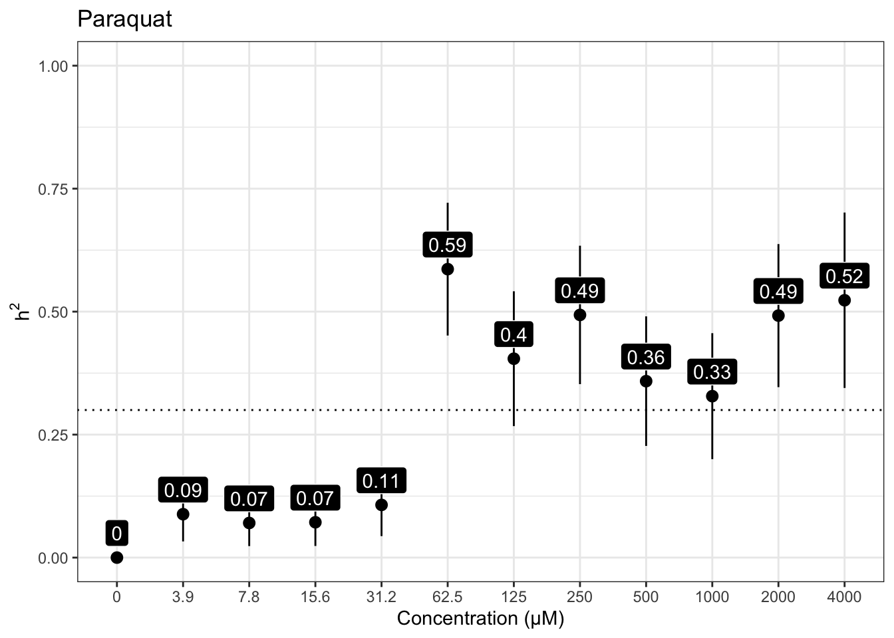
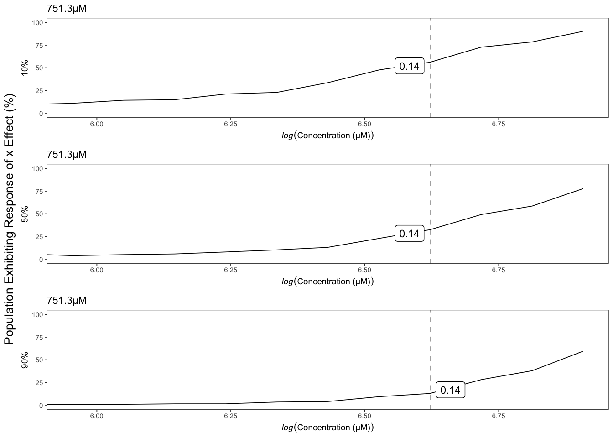
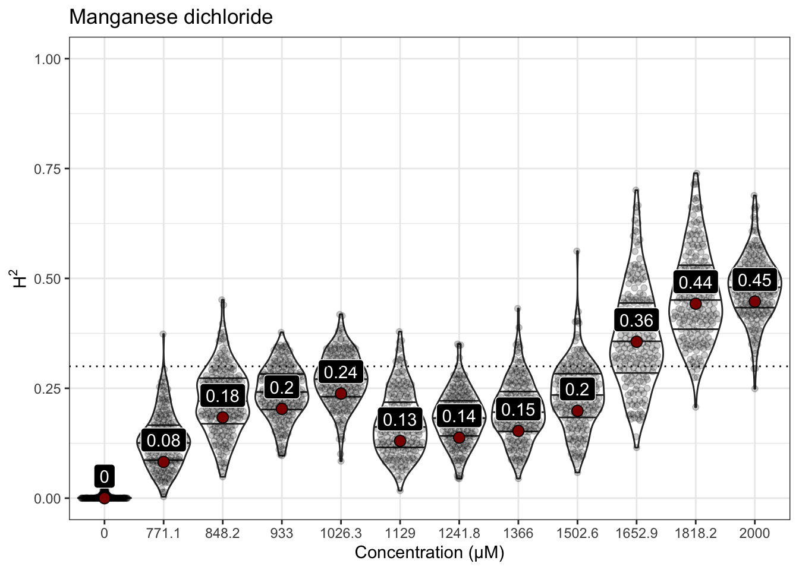
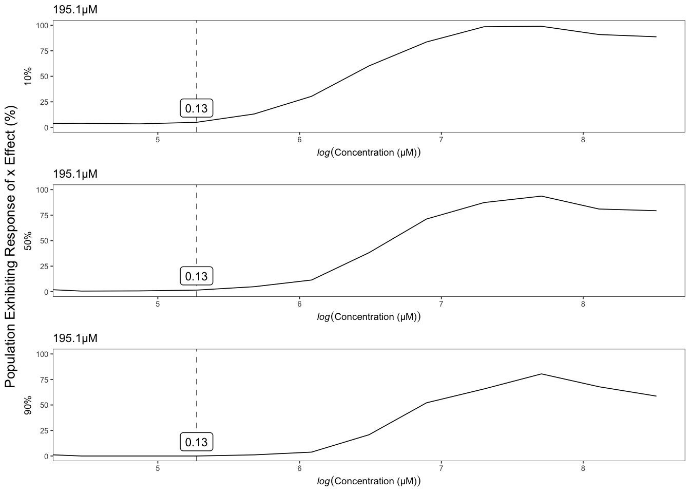

Heritability Analyses
Last updated: 2021-06-01
Checks: 6 1
Knit directory: toxin_dose_responses/
This reproducible R Markdown analysis was created with workflowr (version 1.6.2). The Checks tab describes the reproducibility checks that were applied when the results were created. The Past versions tab lists the development history.
Great! Since the R Markdown file has been committed to the Git repository, you know the exact version of the code that produced these results.
Great job! The global environment was empty. Objects defined in the global environment can affect the analysis in your R Markdown file in unknown ways. For reproduciblity it’s best to always run the code in an empty environment.
The command set.seed(20210305) was run prior to running the code in the R Markdown file. Setting a seed ensures that any results that rely on randomness, e.g. subsampling or permutations, are reproducible.
Great job! Recording the operating system, R version, and package versions is critical for reproducibility.
Nice! There were no cached chunks for this analysis, so you can be confident that you successfully produced the results during this run.
Using absolute paths to the files within your workflowr project makes it difficult for you and others to run your code on a different machine. Change the absolute path(s) below to the suggested relative path(s) to make your code more reproducible.
| absolute | relative |
|---|---|
| ~/Documents/projects/toxin_dose_responses/ | . |
Great! You are using Git for version control. Tracking code development and connecting the code version to the results is critical for reproducibility.
The results in this page were generated with repository version aa19e8e. See the Past versions tab to see a history of the changes made to the R Markdown and HTML files.
Note that you need to be careful to ensure that all relevant files for the analysis have been committed to Git prior to generating the results (you can use wflow_publish or wflow_git_commit). workflowr only checks the R Markdown file, but you know if there are other scripts or data files that it depends on. Below is the status of the Git repository when the results were generated:
Ignored files:
Ignored: .DS_Store
Ignored: .Rhistory
Ignored: analysis/.DS_Store
Ignored: analysis/figure/
Ignored: output/.DS_Store
Untracked files:
Untracked: analysis/genomic.locations.Rmd
Untracked: code/toxin.geno.matrix.sh
Untracked: data/drugclasses.csv
Untracked: data/tx.doses.mappings.numbers
Untracked: output/2,4-DE10plot.png
Untracked: output/2,4-D_EC.plot.png
Untracked: output/2,4-D_EC10.csv
Untracked: output/2,4-D_EC50.csv
Untracked: output/2,4-D_EC90.csv
Untracked: output/2,4-D_EC90.plot.png
Untracked: output/2,4-D_H2.rank.plot.png
Untracked: output/3model.heatmap.png
Untracked: output/4model.heatmap.png
Untracked: output/AldicarbE10plot.png
Untracked: output/Aldicarb_EC.plot.png
Untracked: output/Aldicarb_EC10.csv
Untracked: output/Aldicarb_EC50.csv
Untracked: output/Aldicarb_EC90.csv
Untracked: output/Aldicarb_EC90.plot.png
Untracked: output/Aldicarb_H2.rank.plot.png
Untracked: output/Arsenic trioxideE10plot.png
Untracked: output/Arsenic trioxide_EC.plot.png
Untracked: output/Arsenic trioxide_EC10.csv
Untracked: output/Arsenic trioxide_EC90.plot.png
Untracked: output/Arsenic trioxide_H2.rank.plot.png
Untracked: output/AtrazineE10plot.png
Untracked: output/Atrazine_EC.plot.png
Untracked: output/Atrazine_EC10.csv
Untracked: output/Atrazine_EC50.csv
Untracked: output/Atrazine_EC90.plot.png
Untracked: output/Atrazine_H2.rank.plot.png
Untracked: output/Atrazine_MDHD.junk.png
Untracked: output/Cadmium dichlorideE10plot.png
Untracked: output/Cadmium dichloride_EC.plot.png
Untracked: output/Cadmium dichloride_EC10.csv
Untracked: output/Cadmium dichloride_EC50.csv
Untracked: output/Cadmium dichloride_EC90.csv
Untracked: output/Cadmium dichloride_EC90.plot.png
Untracked: output/Cadmium dichloride_H2.rank.plot.png
Untracked: output/Cadmium dichloride_MDHD.junk.png
Untracked: output/CarbarylE10plot.png
Untracked: output/Carbaryl_EC.plot.png
Untracked: output/Carbaryl_EC10.csv
Untracked: output/Carbaryl_EC50.csv
Untracked: output/Carbaryl_EC90.csv
Untracked: output/Carbaryl_EC90.plot.png
Untracked: output/Carbaryl_H2.rank.plot.png
Untracked: output/CarboxinE10plot.png
Untracked: output/Carboxin_EC.plot.png
Untracked: output/Carboxin_EC10.csv
Untracked: output/Carboxin_EC50.csv
Untracked: output/Carboxin_EC90.csv
Untracked: output/Carboxin_EC90.plot.png
Untracked: output/Carboxin_H2.rank.plot.png
Untracked: output/ChlorfenapyrE10plot.png
Untracked: output/Chlorfenapyr_EC.plot.png
Untracked: output/Chlorfenapyr_EC10.csv
Untracked: output/Chlorfenapyr_EC50.csv
Untracked: output/Chlorfenapyr_EC90.csv
Untracked: output/Chlorfenapyr_EC90.plot.png
Untracked: output/Chlorfenapyr_H2.rank.plot.png
Untracked: output/ChlorothalonilE10plot.png
Untracked: output/Chlorothalonil_EC.plot.png
Untracked: output/Chlorothalonil_EC10.csv
Untracked: output/Chlorothalonil_EC50.csv
Untracked: output/Chlorothalonil_EC90.csv
Untracked: output/Chlorothalonil_EC90.plot.png
Untracked: output/Chlorothalonil_H2.rank.plot.png
Untracked: output/ChlorpyrifosE10plot.png
Untracked: output/Chlorpyrifos_EC.plot.png
Untracked: output/Chlorpyrifos_EC10.csv
Untracked: output/Chlorpyrifos_EC50.csv
Untracked: output/Chlorpyrifos_EC90.csv
Untracked: output/Chlorpyrifos_EC90.plot.png
Untracked: output/Chlorpyrifos_H2.rank.plot.png
Untracked: output/Copper(II) chlorideE10plot.png
Untracked: output/Copper(II) chloride_EC.plot.png
Untracked: output/Copper(II) chloride_EC10.csv
Untracked: output/Copper(II) chloride_EC50.csv
Untracked: output/Copper(II) chloride_EC90.csv
Untracked: output/Copper(II) chloride_EC90.plot.png
Untracked: output/Copper(II) chloride_H2.rank.plot.png
Untracked: output/Deltamethrin_EC.plot.png
Untracked: output/Deltamethrin_EC10.csv
Untracked: output/Deltamethrin_EC50.csv
Untracked: output/Deltamethrin_EC90.csv
Untracked: output/Deltamethrin_EC90.plot.png
Untracked: output/Deltamethrin_H2.rank.plot.png
Untracked: output/EC10.strain.comp.Carbamate Insecticide.png
Untracked: output/EC10.strain.comp.Flame Retardant.png
Untracked: output/EC10.strain.comp.Fungicide.png
Untracked: output/EC10.strain.comp.Heavy Metal.png
Untracked: output/EC10.strain.comp.Herbicide.png
Untracked: output/EC10.strain.comp.Organophosphate insecticide.png
Untracked: output/EC10.strain.comp.Pro-insecticide.png
Untracked: output/EC10.strain.comp.Synthetic Pyrethroid Insecticide.png
Untracked: output/EC10.strain.comp.png
Untracked: output/EC10.survey.png
Untracked: output/EC90.strain.comp.Carbamate Insecticide.png
Untracked: output/EC90.strain.comp.Flame Retardant.png
Untracked: output/EC90.strain.comp.Fungicide.png
Untracked: output/EC90.strain.comp.Heavy Metal.png
Untracked: output/EC90.strain.comp.Herbicide.png
Untracked: output/EC90.strain.comp.Organophosphate insecticide.png
Untracked: output/EC90.strain.comp.Pro-insecticide.png
Untracked: output/EC90.strain.comp.Synthetic Pyrethroid Insecticide.png
Untracked: output/H2.plot.20210306.png
Untracked: output/H2.plot.20210308.png
Untracked: output/H2.plot.20210314.png
Untracked: output/Lead(II) nitrateE10plot.png
Untracked: output/Lead(II) nitrate_EC.plot.png
Untracked: output/Lead(II) nitrate_EC10.csv
Untracked: output/Lead(II) nitrate_EC90.plot.png
Untracked: output/Lead(II) nitrate_H2.rank.plot.png
Untracked: output/MalathionE10plot.png
Untracked: output/Malathion_EC.plot.png
Untracked: output/Malathion_EC10.csv
Untracked: output/Malathion_EC50.csv
Untracked: output/Malathion_EC90.csv
Untracked: output/Malathion_EC90.plot.png
Untracked: output/Malathion_H2.rank.plot.png
Untracked: output/MancozebE10plot.png
Untracked: output/Mancozeb_EC.plot.png
Untracked: output/Mancozeb_EC10.csv
Untracked: output/Mancozeb_EC50.csv
Untracked: output/Mancozeb_EC90.csv
Untracked: output/Mancozeb_EC90.plot.png
Untracked: output/Mancozeb_H2.rank.plot.png
Untracked: output/Manganese dichlorideE10plot.png
Untracked: output/Manganese dichloride_EC.plot.png
Untracked: output/Manganese dichloride_EC10.csv
Untracked: output/Manganese dichloride_EC50.csv
Untracked: output/Manganese dichloride_EC90.csv
Untracked: output/Manganese dichloride_EC90.plot.png
Untracked: output/Manganese dichloride_H2.rank.plot.png
Untracked: output/MethomylE10plot.png
Untracked: output/Methomyl_EC.plot.png
Untracked: output/Methomyl_EC10.csv
Untracked: output/Methomyl_EC50.csv
Untracked: output/Methomyl_EC90.csv
Untracked: output/Methomyl_EC90.plot.png
Untracked: output/Methomyl_H2.rank.plot.png
Untracked: output/Methylmercury dichlorideE10plot.png
Untracked: output/Methylmercury dichloride_EC.plot.png
Untracked: output/Methylmercury dichloride_EC10.csv
Untracked: output/Methylmercury dichloride_EC50.csv
Untracked: output/Methylmercury dichloride_EC90.csv
Untracked: output/Methylmercury dichloride_EC90.plot.png
Untracked: output/Methylmercury dichloride_H2.rank.plot.png
Untracked: output/Nickel dichlorideE10plot.png
Untracked: output/Nickel dichloride_EC.plot.png
Untracked: output/Nickel dichloride_EC10.csv
Untracked: output/Nickel dichloride_EC50.csv
Untracked: output/Nickel dichloride_EC90.csv
Untracked: output/Nickel dichloride_EC90.plot.png
Untracked: output/Nickel dichloride_H2.rank.plot.png
Untracked: output/ParaquatE10plot.png
Untracked: output/Paraquat_EC.plot.png
Untracked: output/Paraquat_EC10.csv
Untracked: output/Paraquat_EC50.csv
Untracked: output/Paraquat_EC90.csv
Untracked: output/Paraquat_EC90.plot.png
Untracked: output/Paraquat_H2.rank.plot.png
Untracked: output/PropoxurE10plot.png
Untracked: output/Propoxur_EC.plot.png
Untracked: output/Propoxur_EC10.csv
Untracked: output/Propoxur_EC50.csv
Untracked: output/Propoxur_EC90.csv
Untracked: output/Propoxur_EC90.plot.png
Untracked: output/Propoxur_H2.rank.plot.png
Untracked: output/PyraclostrobinE10plot.png
Untracked: output/Pyraclostrobin_EC.plot.png
Untracked: output/Pyraclostrobin_EC10.csv
Untracked: output/Pyraclostrobin_EC50.csv
Untracked: output/Pyraclostrobin_EC90.csv
Untracked: output/Pyraclostrobin_EC90.plot.png
Untracked: output/Pyraclostrobin_H2.rank.plot.png
Untracked: output/Pyraclostrobin_MDHD.junk.png
Untracked: output/Silver nitrateE10plot.png
Untracked: output/Silver nitrate_EC.plot.png
Untracked: output/Silver nitrate_EC10.csv
Untracked: output/Silver nitrate_EC50.csv
Untracked: output/Silver nitrate_EC90.csv
Untracked: output/Silver nitrate_EC90.plot.png
Untracked: output/Silver nitrate_H2.rank.plot.png
Untracked: output/Triphenyl phosphateE10plot.png
Untracked: output/Triphenyl phosphate_EC.plot.png
Untracked: output/Triphenyl phosphate_EC10.csv
Untracked: output/Triphenyl phosphate_EC50.csv
Untracked: output/Triphenyl phosphate_EC90.csv
Untracked: output/Triphenyl phosphate_EC90.plot.png
Untracked: output/Triphenyl phosphate_H2.rank.plot.png
Untracked: output/Triphenyl phosphate_MDHD.junk.png
Untracked: output/Zinc dichlorideE10plot.png
Untracked: output/Zinc dichloride_EC.plot.png
Untracked: output/Zinc dichloride_EC10.csv
Untracked: output/Zinc dichloride_EC50.csv
Untracked: output/Zinc dichloride_EC90.csv
Untracked: output/Zinc dichloride_EC90.plot.png
Untracked: output/Zinc dichloride_H2.rank.plot.png
Untracked: output/carb.DRCs.png
Untracked: output/cv.control.wells.csv
Untracked: output/fungi.DRCs.png
Untracked: output/herb.DRCs.png
Untracked: output/manganese_toxin23_p57.png
Untracked: output/metal.DRCs.png
Untracked: output/organophosphate.DRCs.png
Untracked: output/rank.plots.zip
Untracked: output/toxicants.8strains.EC90.csv
Untracked: output/toxicants.8strains.csv
Note that any generated files, e.g. HTML, png, CSS, etc., are not included in this status report because it is ok for generated content to have uncommitted changes.
These are the previous versions of the repository in which changes were made to the R Markdown (analysis/heritability.Rmd) and HTML (docs/heritability.html) files. If you’ve configured a remote Git repository (see ?wflow_git_remote), click on the hyperlinks in the table below to view the files as they were in that past version.
| File | Version | Author | Date | Message |
|---|---|---|---|---|
| Rmd | aa19e8e | sam-widmayer | 2021-06-01 | NIEHS meeting updates |
| Rmd | 45e214b | sam-widmayer | 2021-05-13 | may trip push |
| html | c73a965 | sam-widmayer | 2021-05-05 | Build site. |
| Rmd | 9be65ec | sam-widmayer | 2021-05-05 | normalized rank comparisons for top heritable doses |
| html | 7f8f7f0 | sam-widmayer | 2021-05-04 | Build site. |
| Rmd | 65feca2 | sam-widmayer | 2021-05-04 | minimalist dose response plots |
| html | 8529055 | sam-widmayer | 2021-04-19 | Build site. |
| Rmd | 26547e8 | sam-widmayer | 2021-04-19 | integrate toxin27A |
| html | bc5c5b5 | sam-widmayer | 2021-04-09 | Build site. |
| Rmd | 5cdca37 | sam-widmayer | 2021-04-09 | toxin26A and tx group analyses |
| html | 19f2802 | sam-widmayer | 2021-03-29 | Build site. |
| Rmd | ecf1af1 | sam-widmayer | 2021-03-29 | integrate toxin24A |
| html | a41a855 | sam-widmayer | 2021-03-25 | Build site. |
| Rmd | a6438e9 | sam-widmayer | 2021-03-25 | fix bootstrap bug |
| html | 0280cf4 | sam-widmayer | 2021-03-24 | Build site. |
| Rmd | 8ba0e4b | sam-widmayer | 2021-03-24 | read in geno matrix |
| Rmd | cdb9d3e | sam-widmayer | 2021-03-24 | narrow sense herits and plotting |
| html | 0e83f2b | sam-widmayer | 2021-03-24 | Build site. |
| Rmd | 75da486 | sam-widmayer | 2021-03-24 | progress meeting updates |
| Rmd | 7d105e2 | sam-widmayer | 2021-03-24 | progress meeting updates |
| html | a451b2a | sam-widmayer | 2021-03-17 | Build site. |
| Rmd | 5d61c5a | sam-widmayer | 2021-03-17 | fix NA bug H2.plot |
| Rmd | 576f962 | sam-widmayer | 2021-03-17 | show H2 bootstrap distributions |
| html | 4bcbcdd | sam-widmayer | 2021-03-14 | Build site. |
| Rmd | bdfa65f | sam-widmayer | 2021-03-14 | integrate toxin22 results |
| html | 212e0ae | sam-widmayer | 2021-03-08 | Build site. |
| html | cb6e132 | sam-widmayer | 2021-03-06 | Build site. |
| Rmd | 46c9647 | sam-widmayer | 2021-03-06 | static working directory |
| Rmd | 41bdaa0 | sam-widmayer | 2021-03-05 | dynamic working directory |
| Rmd | 0c9d312 | sam-widmayer | 2021-03-05 | initiate toxin DRC analysis repo |
Silver nitrate
Version out of date. Please update sommer to the newest version using:
install.packages('sommer') in a new session
Use the 'date.warning' argument to disable the warning message.iteration LogLik wall cpu(sec) restrained
1 -132.969 18:29:5 0 0
2 -130.499 18:29:5 0 0
3 -126.21 18:29:5 0 1
4 -124 18:29:5 0 1
5 -124 18:29:5 0 1
Version out of date. Please update sommer to the newest version using:
install.packages('sommer') in a new session
Use the 'date.warning' argument to disable the warning message.iteration LogLik wall cpu(sec) restrained
1 -128.563 18:29:12 0 0
2 -126.602 18:29:12 0 0
3 -124.296 18:29:12 0 0
4 -123.704 18:29:12 0 0
5 -123.679 18:29:12 0 0
6 -123.678 18:29:12 0 0
7 -123.678 18:29:12 0 0
Version out of date. Please update sommer to the newest version using:
install.packages('sommer') in a new session
Use the 'date.warning' argument to disable the warning message.iteration LogLik wall cpu(sec) restrained
1 -129.733 18:29:18 0 0
2 -128.172 18:29:18 0 0
3 -126.56 18:29:18 0 0
4 -125.87 18:29:18 0 0
5 -125.797 18:29:18 0 0
6 -125.786 18:29:19 1 0
7 -125.784 18:29:19 1 0
8 -125.784 18:29:19 1 0
Version out of date. Please update sommer to the newest version using:
install.packages('sommer') in a new session
Use the 'date.warning' argument to disable the warning message.iteration LogLik wall cpu(sec) restrained
1 -127.648 18:29:25 0 0
2 -126.407 18:29:25 0 0
3 -125.416 18:29:25 0 0
4 -125.217 18:29:25 0 0
5 -125.217 18:29:25 0 0
Version out of date. Please update sommer to the newest version using:
install.packages('sommer') in a new session
Use the 'date.warning' argument to disable the warning message.iteration LogLik wall cpu(sec) restrained
1 -128.82 18:29:32 0 0
2 -127.778 18:29:32 0 0
3 -126.906 18:29:32 0 0
4 -126.619 18:29:32 0 0
5 -126.602 18:29:32 0 0
6 -126.602 18:29:32 0 0
Version out of date. Please update sommer to the newest version using:
install.packages('sommer') in a new session
Use the 'date.warning' argument to disable the warning message.iteration LogLik wall cpu(sec) restrained
1 -119.177 18:29:39 1 0
2 -118.648 18:29:39 1 0
3 -118.354 18:29:39 1 0
4 -118.306 18:29:39 1 0
5 -118.306 18:29:39 1 0
Version out of date. Please update sommer to the newest version using:
install.packages('sommer') in a new session
Use the 'date.warning' argument to disable the warning message.iteration LogLik wall cpu(sec) restrained
1 -104.892 18:29:45 0 0
2 -104.86 18:29:45 0 0
3 -104.85 18:29:45 0 0
4 -104.848 18:29:45 0 0
5 -104.848 18:29:45 0 0
Version out of date. Please update sommer to the newest version using:
install.packages('sommer') in a new session
Use the 'date.warning' argument to disable the warning message.iteration LogLik wall cpu(sec) restrained
1 -85.6927 18:29:52 0 0
2 -84.7732 18:29:52 0 0
3 -84.5959 18:29:52 0 0
4 -84.5808 18:29:52 0 0
5 -84.5806 18:29:52 0 0
Version out of date. Please update sommer to the newest version using:
install.packages('sommer') in a new session
Use the 'date.warning' argument to disable the warning message.iteration LogLik wall cpu(sec) restrained
1 -95.6822 18:29:58 0 0
2 -95.4029 18:29:59 1 0
3 -95.3338 18:29:59 1 0
4 -95.3268 18:29:59 1 0
5 -95.3267 18:29:59 1 0
Version out of date. Please update sommer to the newest version using:
install.packages('sommer') in a new session
Use the 'date.warning' argument to disable the warning message.iteration LogLik wall cpu(sec) restrained
1 -97.711 18:30:5 0 0
2 -97.5505 18:30:5 0 0
3 -97.5071 18:30:5 0 0
4 -97.5025 18:30:5 0 0
5 -97.5024 18:30:5 0 0
Version out of date. Please update sommer to the newest version using:
install.packages('sommer') in a new session
Use the 'date.warning' argument to disable the warning message.iteration LogLik wall cpu(sec) restrained
1 -112.183 18:30:12 1 0
2 -111.975 18:30:12 1 0
3 -111.867 18:30:12 1 0
4 -111.844 18:30:12 1 0
5 -111.843 18:30:12 1 0
6 -111.843 18:30:12 1 0
Version out of date. Please update sommer to the newest version using:
install.packages('sommer') in a new session
Use the 'date.warning' argument to disable the warning message.iteration LogLik wall cpu(sec) restrained
1 -46.9803 18:30:18 0 0
2 -44.2125 18:30:18 0 0
3 -43.8184 18:30:18 0 0
4 -43.7899 18:30:18 0 0
5 -43.7896 18:30:18 0 0
| Version | Author | Date |
|---|---|---|
| 8529055 | sam-widmayer | 2021-04-19 |
| bc5c5b5 | sam-widmayer | 2021-04-09 |
| 19f2802 | sam-widmayer | 2021-03-29 |
| a41a855 | sam-widmayer | 2021-03-25 |
| 0280cf4 | sam-widmayer | 2021-03-24 |
| 0e83f2b | sam-widmayer | 2021-03-24 |
| a451b2a | sam-widmayer | 2021-03-17 |
| 4bcbcdd | sam-widmayer | 2021-03-14 |
| cb6e132 | sam-widmayer | 2021-03-06 |


| Version | Author | Date |
|---|---|---|
| 7f8f7f0 | sam-widmayer | 2021-05-04 |
Cadmium dichloride
Version out of date. Please update sommer to the newest version using:
install.packages('sommer') in a new session
Use the 'date.warning' argument to disable the warning message.iteration LogLik wall cpu(sec) restrained
1 -125.669 18:30:28 0 0
2 -123.932 18:30:28 0 0
3 -121.98 18:30:28 0 0
4 -121.188 18:30:28 0 0
5 -121.185 18:30:28 0 0
6 -121.185 18:30:28 0 0
Version out of date. Please update sommer to the newest version using:
install.packages('sommer') in a new session
Use the 'date.warning' argument to disable the warning message.iteration LogLik wall cpu(sec) restrained
1 -126.566 18:30:35 0 0
2 -124.621 18:30:35 0 0
3 -122.272 18:30:35 0 0
4 -121.615 18:30:35 0 0
5 -121.564 18:30:35 0 0
6 -121.553 18:30:35 0 0
7 -121.55 18:30:35 0 0
8 -121.55 18:30:35 0 0
Version out of date. Please update sommer to the newest version using:
install.packages('sommer') in a new session
Use the 'date.warning' argument to disable the warning message.iteration LogLik wall cpu(sec) restrained
1 -125.195 18:30:41 0 0
2 -123.088 18:30:41 0 0
3 -120.302 18:30:41 0 0
4 -119.918 18:30:42 1 0
5 -119.663 18:30:42 1 0
6 -119.592 18:30:42 1 0
7 -119.532 18:30:42 1 0
8 -119.509 18:30:42 1 0
9 -119.492 18:30:42 1 0
10 -119.483 18:30:42 1 0
11 -119.478 18:30:42 1 0
12 -119.475 18:30:42 1 0
13 -119.473 18:30:42 1 0
14 -119.472 18:30:42 1 0
Version out of date. Please update sommer to the newest version using:
install.packages('sommer') in a new session
Use the 'date.warning' argument to disable the warning message.iteration LogLik wall cpu(sec) restrained
1 -122.229 18:30:48 0 0
2 -120.775 18:30:49 1 0
3 -119.421 18:30:49 1 0
4 -119.073 18:30:49 1 0
5 -119.073 18:30:49 1 0
Version out of date. Please update sommer to the newest version using:
install.packages('sommer') in a new session
Use the 'date.warning' argument to disable the warning message.iteration LogLik wall cpu(sec) restrained
1 -123.023 18:30:55 0 0
2 -121.444 18:30:55 0 0
3 -119.903 18:30:55 0 0
4 -119.538 18:30:56 1 0
5 -119.537 18:30:56 1 0
6 -119.536 18:30:56 1 0
Version out of date. Please update sommer to the newest version using:
install.packages('sommer') in a new session
Use the 'date.warning' argument to disable the warning message.iteration LogLik wall cpu(sec) restrained
1 -121.444 18:31:2 0 0
2 -120.129 18:31:2 0 0
3 -118.948 18:31:2 0 0
4 -118.602 18:31:2 0 0
5 -118.596 18:31:2 0 0
6 -118.596 18:31:2 0 0
Version out of date. Please update sommer to the newest version using:
install.packages('sommer') in a new session
Use the 'date.warning' argument to disable the warning message.iteration LogLik wall cpu(sec) restrained
1 -125.573 18:31:9 0 0
2 -123.751 18:31:9 0 0
3 -121.718 18:31:9 0 0
4 -121.308 18:31:9 0 0
5 -121.265 18:31:9 0 0
6 -121.254 18:31:9 0 0
7 -121.252 18:31:9 0 0
8 -121.251 18:31:9 0 0
Version out of date. Please update sommer to the newest version using:
install.packages('sommer') in a new session
Use the 'date.warning' argument to disable the warning message.iteration LogLik wall cpu(sec) restrained
1 -115.147 18:31:15 0 0
2 -114.589 18:31:15 0 0
3 -114.265 18:31:15 0 0
4 -114.206 18:31:15 0 0
5 -114.205 18:31:15 0 0
6 -114.205 18:31:16 1 0
Version out of date. Please update sommer to the newest version using:
install.packages('sommer') in a new session
Use the 'date.warning' argument to disable the warning message.iteration LogLik wall cpu(sec) restrained
1 -111.065 18:31:22 0 0
2 -109.926 18:31:22 0 0
3 -109.134 18:31:22 0 0
4 -109.044 18:31:22 0 0
5 -109.043 18:31:22 0 0
Version out of date. Please update sommer to the newest version using:
install.packages('sommer') in a new session
Use the 'date.warning' argument to disable the warning message.iteration LogLik wall cpu(sec) restrained
1 -82.9365 18:31:29 0 0
2 -82.9339 18:31:29 0 0
3 -82.9331 18:31:29 0 0
4 -82.933 18:31:29 0 0
Version out of date. Please update sommer to the newest version using:
install.packages('sommer') in a new session
Use the 'date.warning' argument to disable the warning message.iteration LogLik wall cpu(sec) restrained
1 -71.5693 18:31:35 0 0
2 -70.4962 18:31:35 0 0
3 -70.2481 18:31:35 0 0
4 -70.2218 18:31:35 0 0
5 -70.2212 18:31:35 0 0
Version out of date. Please update sommer to the newest version using:
install.packages('sommer') in a new session
Use the 'date.warning' argument to disable the warning message.iteration LogLik wall cpu(sec) restrained
1 -130.931 18:31:41 0 0
2 -128.458 18:31:41 0 0
3 -124.163 18:31:42 1 1
4 -122 18:31:42 1 1
5 -122 18:31:42 1 1
| Version | Author | Date |
|---|---|---|
| 8529055 | sam-widmayer | 2021-04-19 |
| bc5c5b5 | sam-widmayer | 2021-04-09 |
| 19f2802 | sam-widmayer | 2021-03-29 |
| a41a855 | sam-widmayer | 2021-03-25 |
| 0280cf4 | sam-widmayer | 2021-03-24 |
| 0e83f2b | sam-widmayer | 2021-03-24 |
| a451b2a | sam-widmayer | 2021-03-17 |
| 4bcbcdd | sam-widmayer | 2021-03-14 |
| cb6e132 | sam-widmayer | 2021-03-06 |


| Version | Author | Date |
|---|---|---|
| 7f8f7f0 | sam-widmayer | 2021-05-04 |
Copper (II) dichloride
Version out of date. Please update sommer to the newest version using:
install.packages('sommer') in a new session
Use the 'date.warning' argument to disable the warning message.iteration LogLik wall cpu(sec) restrained
1 -80.0137 18:31:51 0 0
2 -78.873 18:31:51 0 0
3 -78.1201 18:31:51 0 0
4 -78.0629 18:31:51 0 0
5 -78.0607 18:31:51 0 0
6 -78.0606 18:31:51 0 0
Version out of date. Please update sommer to the newest version using:
install.packages('sommer') in a new session
Use the 'date.warning' argument to disable the warning message.iteration LogLik wall cpu(sec) restrained
1 -125.053 18:31:58 0 0
2 -123.891 18:31:58 0 0
3 -122.974 18:31:58 0 0
4 -122.786 18:31:58 0 0
5 -122.785 18:31:58 0 0
Version out of date. Please update sommer to the newest version using:
install.packages('sommer') in a new session
Use the 'date.warning' argument to disable the warning message.iteration LogLik wall cpu(sec) restrained
1 -129.499 18:32:4 0 0
2 -128.209 18:32:4 0 0
3 -127.047 18:32:4 0 0
4 -126.685 18:32:4 0 0
5 -126.677 18:32:5 1 0
6 -126.677 18:32:5 1 0
Version out of date. Please update sommer to the newest version using:
install.packages('sommer') in a new session
Use the 'date.warning' argument to disable the warning message.iteration LogLik wall cpu(sec) restrained
1 -126.538 18:32:11 0 0
2 -125.409 18:32:11 0 0
3 -124.56 18:32:11 0 0
4 -124.403 18:32:11 0 0
5 -124.402 18:32:11 0 0
Version out of date. Please update sommer to the newest version using:
install.packages('sommer') in a new session
Use the 'date.warning' argument to disable the warning message.iteration LogLik wall cpu(sec) restrained
1 -120.42 18:32:18 0 0
2 -119.955 18:32:18 0 0
3 -119.719 18:32:18 0 0
4 -119.687 18:32:18 0 0
5 -119.687 18:32:18 0 0
Version out of date. Please update sommer to the newest version using:
install.packages('sommer') in a new session
Use the 'date.warning' argument to disable the warning message.iteration LogLik wall cpu(sec) restrained
1 -117.229 18:32:24 0 0
2 -116.794 18:32:24 0 0
3 -116.567 18:32:24 0 0
4 -116.532 18:32:25 1 0
5 -116.532 18:32:25 1 0
Version out of date. Please update sommer to the newest version using:
install.packages('sommer') in a new session
Use the 'date.warning' argument to disable the warning message.iteration LogLik wall cpu(sec) restrained
1 -43.2017 18:32:31 0 0
2 -43.1799 18:32:31 0 0
3 -43.1711 18:32:31 0 0
4 -43.1694 18:32:31 0 0
5 -43.1693 18:32:31 0 0
[1] "Only 1 Strain Sampled in Bootstrap - Skipping"
[1] "Only 1 Strain Sampled in Bootstrap - Skipping"
[1] "Only 1 Strain Sampled in Bootstrap - Skipping"
[1] "Only 1 Strain Sampled in Bootstrap - Skipping"
[1] "Only 1 Strain Sampled in Bootstrap - Skipping"
[1] "Only 1 Strain Sampled in Bootstrap - Skipping"
[1] "Only 1 Strain Sampled in Bootstrap - Skipping"
Version out of date. Please update sommer to the newest version using:
install.packages('sommer') in a new session
Use the 'date.warning' argument to disable the warning message.iteration LogLik wall cpu(sec) restrained
1 -124.735 18:32:37 0 0
2 -123.689 18:32:37 0 0
3 -122.895 18:32:37 0 0
4 -122.721 18:32:37 0 0
5 -122.72 18:32:37 0 0
6 -122.72 18:32:37 0 0
Version out of date. Please update sommer to the newest version using:
install.packages('sommer') in a new session
Use the 'date.warning' argument to disable the warning message.iteration LogLik wall cpu(sec) restrained
1 -121.197 18:32:44 0 0
2 -120.203 18:32:44 0 0
3 -119.467 18:32:44 0 0
4 -119.305 18:32:44 0 0
5 -119.302 18:32:44 0 0
6 -119.302 18:32:44 0 0
Version out of date. Please update sommer to the newest version using:
install.packages('sommer') in a new session
Use the 'date.warning' argument to disable the warning message.iteration LogLik wall cpu(sec) restrained
1 -129.631 18:32:51 0 0
2 -128.197 18:32:51 0 0
3 -126.913 18:32:51 0 0
4 -126.64 18:32:51 0 0
5 -126.64 18:32:51 0 0
Version out of date. Please update sommer to the newest version using:
install.packages('sommer') in a new session
Use the 'date.warning' argument to disable the warning message.iteration LogLik wall cpu(sec) restrained
1 -139.126 18:32:58 1 0
2 -136.656 18:32:58 1 0
3 -132.367 18:32:58 1 1
4 -130 18:32:58 1 1
5 -130 18:32:58 1 1
Version out of date. Please update sommer to the newest version using:
install.packages('sommer') in a new session
Use the 'date.warning' argument to disable the warning message.iteration LogLik wall cpu(sec) restrained
1 -127.368 18:33:4 0 0
2 -125.899 18:33:4 0 0
3 -124.618 18:33:4 0 0
4 -124.422 18:33:4 0 0
5 -124.417 18:33:4 0 0
6 -124.417 18:33:4 0 0
| Version | Author | Date |
|---|---|---|
| 8529055 | sam-widmayer | 2021-04-19 |
| bc5c5b5 | sam-widmayer | 2021-04-09 |
| 19f2802 | sam-widmayer | 2021-03-29 |
| a41a855 | sam-widmayer | 2021-03-25 |
| 0280cf4 | sam-widmayer | 2021-03-24 |
| 0e83f2b | sam-widmayer | 2021-03-24 |
| a451b2a | sam-widmayer | 2021-03-17 |
| 4bcbcdd | sam-widmayer | 2021-03-14 |
| cb6e132 | sam-widmayer | 2021-03-06 |


| Version | Author | Date |
|---|---|---|
| 7f8f7f0 | sam-widmayer | 2021-05-04 |
Nickel dichloride
Version out of date. Please update sommer to the newest version using:
install.packages('sommer') in a new session
Use the 'date.warning' argument to disable the warning message.iteration LogLik wall cpu(sec) restrained
1 -104.688 18:33:14 0 0
2 -102.204 18:33:14 0 0
3 -97.8879 18:33:14 0 1
4 -96.5 18:33:14 0 1
5 -96.5 18:33:14 0 1
Version out of date. Please update sommer to the newest version using:
install.packages('sommer') in a new session
Use the 'date.warning' argument to disable the warning message.iteration LogLik wall cpu(sec) restrained
1 -106.844 18:33:20 0 0
2 -104.51 18:33:20 0 0
3 -100.924 18:33:20 0 1
4 -99.5 18:33:20 0 1
5 -99.5 18:33:20 0 1
Version out of date. Please update sommer to the newest version using:
install.packages('sommer') in a new session
Use the 'date.warning' argument to disable the warning message.iteration LogLik wall cpu(sec) restrained
1 -108.535 18:33:27 0 0
2 -106.537 18:33:27 0 0
3 -104.008 18:33:27 0 0
4 -103.453 18:33:27 0 0
5 -103.297 18:33:27 0 0
6 -103.248 18:33:27 0 0
7 -103.224 18:33:27 0 0
8 -103.214 18:33:27 0 0
9 -103.21 18:33:27 0 0
10 -103.208 18:33:27 0 0
11 -103.207 18:33:27 0 0
Version out of date. Please update sommer to the newest version using:
install.packages('sommer') in a new session
Use the 'date.warning' argument to disable the warning message.iteration LogLik wall cpu(sec) restrained
1 -107.661 18:33:33 0 0
2 -106.024 18:33:33 0 0
3 -104.151 18:33:33 0 0
4 -102.88 18:33:33 0 1
5 -102.5 18:33:33 0 1
6 -102.5 18:33:34 1 1
Version out of date. Please update sommer to the newest version using:
install.packages('sommer') in a new session
Use the 'date.warning' argument to disable the warning message.iteration LogLik wall cpu(sec) restrained
1 -104.684 18:33:40 0 0
2 -103.497 18:33:40 0 0
3 -102.315 18:33:40 0 0
4 -101.576 18:33:40 0 0
5 -101.289 18:33:40 0 0
6 -101.139 18:33:40 0 0
7 -101.042 18:33:40 0 1
8 -101 18:33:40 0 1
9 -101 18:33:40 0 1
Version out of date. Please update sommer to the newest version using:
install.packages('sommer') in a new session
Use the 'date.warning' argument to disable the warning message.iteration LogLik wall cpu(sec) restrained
1 -102.987 18:33:47 1 0
2 -102.236 18:33:47 1 0
3 -101.659 18:33:47 1 0
4 -101.442 18:33:47 1 0
5 -101.41 18:33:47 1 0
6 -101.404 18:33:47 1 0
7 -101.404 18:33:47 1 0
Version out of date. Please update sommer to the newest version using:
install.packages('sommer') in a new session
Use the 'date.warning' argument to disable the warning message.iteration LogLik wall cpu(sec) restrained
1 -102.458 18:33:53 0 0
2 -101.261 18:33:53 0 0
3 -100.293 18:33:53 0 0
4 -100.062 18:33:53 0 0
5 -100.058 18:33:53 0 0
6 -100.058 18:33:53 0 0
Version out of date. Please update sommer to the newest version using:
install.packages('sommer') in a new session
Use the 'date.warning' argument to disable the warning message.iteration LogLik wall cpu(sec) restrained
1 -98.5748 18:34:0 0 0
2 -96.7764 18:34:0 0 0
3 -94.7545 18:34:0 0 0
4 -93.9631 18:34:0 0 0
5 -93.9519 18:34:0 0 0
6 -93.9518 18:34:0 0 0
Version out of date. Please update sommer to the newest version using:
install.packages('sommer') in a new session
Use the 'date.warning' argument to disable the warning message.iteration LogLik wall cpu(sec) restrained
1 -98.3541 18:34:6 0 0
2 -97.2899 18:34:6 0 0
3 -96.3691 18:34:6 0 0
4 -96.016 18:34:6 0 0
5 -95.9813 18:34:6 0 0
6 -95.9785 18:34:6 0 0
7 -95.9783 18:34:6 0 0
Version out of date. Please update sommer to the newest version using:
install.packages('sommer') in a new session
Use the 'date.warning' argument to disable the warning message.iteration LogLik wall cpu(sec) restrained
1 -97.3852 18:34:13 0 0
2 -96.2312 18:34:13 0 0
3 -95.3129 18:34:13 0 0
4 -95.0812 18:34:13 0 0
5 -95.0737 18:34:13 0 0
6 -95.0734 18:34:13 0 0
Version out of date. Please update sommer to the newest version using:
install.packages('sommer') in a new session
Use the 'date.warning' argument to disable the warning message.iteration LogLik wall cpu(sec) restrained
1 -44.7769 18:34:19 0 0
2 -43.1144 18:34:19 0 0
3 -42.8744 18:34:19 0 0
4 -42.8579 18:34:19 0 0
5 -42.8578 18:34:19 0 0
Version out of date. Please update sommer to the newest version using:
install.packages('sommer') in a new session
Use the 'date.warning' argument to disable the warning message.iteration LogLik wall cpu(sec) restrained
1 7.32736 18:34:26 0 0
2 14.6095 18:34:26 0 0
3 15.0177 18:34:26 0 0
4 15.0357 18:34:26 0 0
5 15.0358 18:34:26 0 0
[1] "Only 1 Strain Sampled in Bootstrap - Skipping"
[1] "Only 1 Strain Sampled in Bootstrap - Skipping"
[1] "Only 1 Strain Sampled in Bootstrap - Skipping"
[1] "Only 1 Strain Sampled in Bootstrap - Skipping"
| Version | Author | Date |
|---|---|---|
| 8529055 | sam-widmayer | 2021-04-19 |
| bc5c5b5 | sam-widmayer | 2021-04-09 |
| 19f2802 | sam-widmayer | 2021-03-29 |
| a41a855 | sam-widmayer | 2021-03-25 |
| 0280cf4 | sam-widmayer | 2021-03-24 |
| 0e83f2b | sam-widmayer | 2021-03-24 |
| a451b2a | sam-widmayer | 2021-03-17 |
| 4bcbcdd | sam-widmayer | 2021-03-14 |
| cb6e132 | sam-widmayer | 2021-03-06 |


| Version | Author | Date |
|---|---|---|
| 7f8f7f0 | sam-widmayer | 2021-05-04 |
Paraquat
Version out of date. Please update sommer to the newest version using:
install.packages('sommer') in a new session
Use the 'date.warning' argument to disable the warning message.iteration LogLik wall cpu(sec) restrained
1 -94.3497 18:34:35 0 0
2 -91.8601 18:34:35 0 0
3 -87.5304 18:34:35 0 1
4 -86.5 18:34:35 0 1
5 -86.5 18:34:35 0 1
Version out of date. Please update sommer to the newest version using:
install.packages('sommer') in a new session
Use the 'date.warning' argument to disable the warning message.iteration LogLik wall cpu(sec) restrained
1 -76.9557 18:34:41 0 0
2 -76.5742 18:34:41 0 0
3 -76.4086 18:34:41 0 0
4 -76.3939 18:34:41 0 0
5 -76.3939 18:34:41 0 0
Version out of date. Please update sommer to the newest version using:
install.packages('sommer') in a new session
Use the 'date.warning' argument to disable the warning message.iteration LogLik wall cpu(sec) restrained
1 -84.4391 18:34:48 0 0
2 -83.8422 18:34:48 0 0
3 -83.542 18:34:48 0 0
4 -83.5123 18:34:48 0 0
5 -83.5123 18:34:48 0 0
Version out of date. Please update sommer to the newest version using:
install.packages('sommer') in a new session
Use the 'date.warning' argument to disable the warning message.iteration LogLik wall cpu(sec) restrained
1 -83.1453 18:34:54 0 0
2 -82.7354 18:34:54 0 0
3 -82.4883 18:34:54 0 0
4 -82.428 18:34:54 0 0
5 -82.4242 18:34:54 0 0
6 -82.424 18:34:54 0 0
Version out of date. Please update sommer to the newest version using:
install.packages('sommer') in a new session
Use the 'date.warning' argument to disable the warning message.iteration LogLik wall cpu(sec) restrained
1 -73.0264 18:35:1 0 0
2 -72.8093 18:35:1 0 0
3 -72.7288 18:35:1 0 0
4 -72.7227 18:35:1 0 0
5 -72.7227 18:35:1 0 0
Version out of date. Please update sommer to the newest version using:
install.packages('sommer') in a new session
Use the 'date.warning' argument to disable the warning message.iteration LogLik wall cpu(sec) restrained
1 -26.112 18:35:7 0 0
2 -23.2014 18:35:7 0 0
3 -22.899 18:35:7 0 0
4 -22.8821 18:35:7 0 0
5 -22.882 18:35:7 0 0
Version out of date. Please update sommer to the newest version using:
install.packages('sommer') in a new session
Use the 'date.warning' argument to disable the warning message.iteration LogLik wall cpu(sec) restrained
1 -25.6661 18:35:14 0 0
2 -20.5234 18:35:14 0 0
3 -19.9642 18:35:14 0 0
4 -19.9292 18:35:14 0 0
5 -19.9289 18:35:14 0 0
Version out of date. Please update sommer to the newest version using:
install.packages('sommer') in a new session
Use the 'date.warning' argument to disable the warning message.iteration LogLik wall cpu(sec) restrained
1 -38.8659 18:35:20 0 0
2 -37.0532 18:35:20 0 0
3 -36.8065 18:35:20 0 0
4 -36.7904 18:35:20 0 0
5 -36.7903 18:35:20 0 0
Version out of date. Please update sommer to the newest version using:
install.packages('sommer') in a new session
Use the 'date.warning' argument to disable the warning message.iteration LogLik wall cpu(sec) restrained
1 -21.5583 18:35:26 0 0
2 -17.3085 18:35:26 0 0
3 -16.7549 18:35:26 0 0
4 -16.7197 18:35:26 0 0
5 -16.7193 18:35:26 0 0
[1] "Only 1 Strain Sampled in Bootstrap - Skipping"
[1] "Only 1 Strain Sampled in Bootstrap - Skipping"
Version out of date. Please update sommer to the newest version using:
install.packages('sommer') in a new session
Use the 'date.warning' argument to disable the warning message.iteration LogLik wall cpu(sec) restrained
1 -13.259 18:35:33 0 0
2 -11.9935 18:35:33 0 0
3 -11.3294 18:35:33 0 0
4 -11.1991 18:35:33 0 0
5 -11.1927 18:35:33 0 0
6 -11.1924 18:35:33 0 0
[1] "Only 1 Strain Sampled in Bootstrap - Skipping"
[1] "Only 1 Strain Sampled in Bootstrap - Skipping"
[1] "Only 1 Strain Sampled in Bootstrap - Skipping"
[1] "Only 1 Strain Sampled in Bootstrap - Skipping"
[1] "Only 1 Strain Sampled in Bootstrap - Skipping"
[1] "Only 1 Strain Sampled in Bootstrap - Skipping"
[1] "Only 1 Strain Sampled in Bootstrap - Skipping"
[1] "Only 1 Strain Sampled in Bootstrap - Skipping"
[1] "Only 1 Strain Sampled in Bootstrap - Skipping"
[1] "Only 1 Strain Sampled in Bootstrap - Skipping"
[1] "Only 1 Strain Sampled in Bootstrap - Skipping"
[1] "Only 1 Strain Sampled in Bootstrap - Skipping"
[1] "Only 1 Strain Sampled in Bootstrap - Skipping"
[1] "Only 1 Strain Sampled in Bootstrap - Skipping"
[1] "Only 1 Strain Sampled in Bootstrap - Skipping"
[1] "Only 1 Strain Sampled in Bootstrap - Skipping"
[1] "Only 1 Strain Sampled in Bootstrap - Skipping"
[1] "Only 1 Strain Sampled in Bootstrap - Skipping"
[1] "Only 1 Strain Sampled in Bootstrap - Skipping"
[1] "Only 1 Strain Sampled in Bootstrap - Skipping"
[1] "Only 1 Strain Sampled in Bootstrap - Skipping"
[1] "Only 1 Strain Sampled in Bootstrap - Skipping"
[1] "Only 1 Strain Sampled in Bootstrap - Skipping"
[1] "Only 1 Strain Sampled in Bootstrap - Skipping"
[1] "Only 1 Strain Sampled in Bootstrap - Skipping"
[1] "Only 1 Strain Sampled in Bootstrap - Skipping"
[1] "Only 1 Strain Sampled in Bootstrap - Skipping"
[1] "Only 1 Strain Sampled in Bootstrap - Skipping"
[1] "Only 1 Strain Sampled in Bootstrap - Skipping"
[1] "Only 1 Strain Sampled in Bootstrap - Skipping"
[1] "Only 1 Strain Sampled in Bootstrap - Skipping"
[1] "Only 1 Strain Sampled in Bootstrap - Skipping"
[1] "Only 1 Strain Sampled in Bootstrap - Skipping"
[1] "Only 1 Strain Sampled in Bootstrap - Skipping"
[1] "Only 1 Strain Sampled in Bootstrap - Skipping"
[1] "Only 1 Strain Sampled in Bootstrap - Skipping"
[1] "Only 1 Strain Sampled in Bootstrap - Skipping"
[1] "Only 1 Strain Sampled in Bootstrap - Skipping"
[1] "Only 1 Strain Sampled in Bootstrap - Skipping"
[1] "Only 1 Strain Sampled in Bootstrap - Skipping"
[1] "Only 1 Strain Sampled in Bootstrap - Skipping"
[1] "Only 1 Strain Sampled in Bootstrap - Skipping"
[1] "Only 1 Strain Sampled in Bootstrap - Skipping"
[1] "Only 1 Strain Sampled in Bootstrap - Skipping"
[1] "Only 1 Strain Sampled in Bootstrap - Skipping"
[1] "Only 1 Strain Sampled in Bootstrap - Skipping"
[1] "Only 1 Strain Sampled in Bootstrap - Skipping"
[1] "Only 1 Strain Sampled in Bootstrap - Skipping"
[1] "Only 1 Strain Sampled in Bootstrap - Skipping"
[1] "Only 1 Strain Sampled in Bootstrap - Skipping"
[1] "Only 1 Strain Sampled in Bootstrap - Skipping"
[1] "Only 1 Strain Sampled in Bootstrap - Skipping"
[1] "Only 1 Strain Sampled in Bootstrap - Skipping"
[1] "Only 1 Strain Sampled in Bootstrap - Skipping"
[1] "Only 1 Strain Sampled in Bootstrap - Skipping"
[1] "Only 1 Strain Sampled in Bootstrap - Skipping"
[1] "Only 1 Strain Sampled in Bootstrap - Skipping"
[1] "Only 1 Strain Sampled in Bootstrap - Skipping"
[1] "Only 1 Strain Sampled in Bootstrap - Skipping"
[1] "Only 1 Strain Sampled in Bootstrap - Skipping"
[1] "Only 1 Strain Sampled in Bootstrap - Skipping"
[1] "Only 1 Strain Sampled in Bootstrap - Skipping"
[1] "Only 1 Strain Sampled in Bootstrap - Skipping"
[1] "Only 1 Strain Sampled in Bootstrap - Skipping"
[1] "Only 1 Strain Sampled in Bootstrap - Skipping"
[1] "Only 1 Strain Sampled in Bootstrap - Skipping"
[1] "Only 1 Strain Sampled in Bootstrap - Skipping"
[1] "Only 1 Strain Sampled in Bootstrap - Skipping"
[1] "Only 1 Strain Sampled in Bootstrap - Skipping"
[1] "Only 1 Strain Sampled in Bootstrap - Skipping"
[1] "Only 1 Strain Sampled in Bootstrap - Skipping"
[1] "Only 1 Strain Sampled in Bootstrap - Skipping"
[1] "Only 1 Strain Sampled in Bootstrap - Skipping"
[1] "Only 1 Strain Sampled in Bootstrap - Skipping"
[1] "Only 1 Strain Sampled in Bootstrap - Skipping"
[1] "Only 1 Strain Sampled in Bootstrap - Skipping"
[1] "Only 1 Strain Sampled in Bootstrap - Skipping"
[1] "Only 1 Strain Sampled in Bootstrap - Skipping"
[1] "Only 1 Strain Sampled in Bootstrap - Skipping"
[1] "Only 1 Strain Sampled in Bootstrap - Skipping"
[1] "Only 1 Strain Sampled in Bootstrap - Skipping"
[1] "Only 1 Strain Sampled in Bootstrap - Skipping"
[1] "Only 1 Strain Sampled in Bootstrap - Skipping"
[1] "Only 1 Strain Sampled in Bootstrap - Skipping"
[1] "Only 1 Strain Sampled in Bootstrap - Skipping"
[1] "Only 1 Strain Sampled in Bootstrap - Skipping"
[1] "Only 1 Strain Sampled in Bootstrap - Skipping"
[1] "Only 1 Strain Sampled in Bootstrap - Skipping"
[1] "Only 1 Strain Sampled in Bootstrap - Skipping"
[1] "Only 1 Strain Sampled in Bootstrap - Skipping"
[1] "Only 1 Strain Sampled in Bootstrap - Skipping"
[1] "Only 1 Strain Sampled in Bootstrap - Skipping"
[1] "Only 1 Strain Sampled in Bootstrap - Skipping"
[1] "Only 1 Strain Sampled in Bootstrap - Skipping"
[1] "Only 1 Strain Sampled in Bootstrap - Skipping"
[1] "Only 1 Strain Sampled in Bootstrap - Skipping"
[1] "Only 1 Strain Sampled in Bootstrap - Skipping"
[1] "Only 1 Strain Sampled in Bootstrap - Skipping"
[1] "Only 1 Strain Sampled in Bootstrap - Skipping"
[1] "Only 1 Strain Sampled in Bootstrap - Skipping"
[1] "Only 1 Strain Sampled in Bootstrap - Skipping"
[1] "Only 1 Strain Sampled in Bootstrap - Skipping"
[1] "Only 1 Strain Sampled in Bootstrap - Skipping"
[1] "Only 1 Strain Sampled in Bootstrap - Skipping"
[1] "Only 1 Strain Sampled in Bootstrap - Skipping"
[1] "Only 1 Strain Sampled in Bootstrap - Skipping"
[1] "Only 1 Strain Sampled in Bootstrap - Skipping"
Version out of date. Please update sommer to the newest version using:
install.packages('sommer') in a new session
Use the 'date.warning' argument to disable the warning message.iteration LogLik wall cpu(sec) restrained
1 -1.15402 18:35:37 0 0
2 8.79693 18:35:37 0 0
3 9.49022 18:35:37 0 0
4 9.52662 18:35:37 0 0
5 9.52689 18:35:37 0 0
Version out of date. Please update sommer to the newest version using:
install.packages('sommer') in a new session
Use the 'date.warning' argument to disable the warning message.iteration LogLik wall cpu(sec) restrained
1 -44.4096 18:35:43 0 0
2 -43.225 18:35:43 0 0
3 -43.0221 18:35:43 0 0
4 -43.0067 18:35:43 0 0
5 -43.0065 18:35:43 0 0
| Version | Author | Date |
|---|---|---|
| 8529055 | sam-widmayer | 2021-04-19 |
| bc5c5b5 | sam-widmayer | 2021-04-09 |
| 19f2802 | sam-widmayer | 2021-03-29 |
| a41a855 | sam-widmayer | 2021-03-25 |
| 0280cf4 | sam-widmayer | 2021-03-24 |
| 0e83f2b | sam-widmayer | 2021-03-24 |
| a451b2a | sam-widmayer | 2021-03-17 |
| 4bcbcdd | sam-widmayer | 2021-03-14 |
| cb6e132 | sam-widmayer | 2021-03-06 |



| Version | Author | Date |
|---|---|---|
| 7f8f7f0 | sam-widmayer | 2021-05-04 |
Zinc dichloride
Version out of date. Please update sommer to the newest version using:
install.packages('sommer') in a new session
Use the 'date.warning' argument to disable the warning message.iteration LogLik wall cpu(sec) restrained
1 -114.487 18:35:53 0 0
2 -112.009 18:35:53 0 0
3 -107.702 18:35:53 0 1
4 -106 18:35:53 0 1
5 -106 18:35:53 0 1
Version out of date. Please update sommer to the newest version using:
install.packages('sommer') in a new session
Use the 'date.warning' argument to disable the warning message.iteration LogLik wall cpu(sec) restrained
1 -109.647 18:36:0 0 0
2 -107.714 18:36:0 0 0
3 -105.44 18:36:0 0 0
4 -104.744 18:36:0 0 0
5 -104.73 18:36:0 0 0
6 -104.729 18:36:0 0 0
Version out of date. Please update sommer to the newest version using:
install.packages('sommer') in a new session
Use the 'date.warning' argument to disable the warning message.iteration LogLik wall cpu(sec) restrained
1 -109.206 18:36:6 0 0
2 -107.557 18:36:6 0 0
3 -105.835 18:36:6 0 0
4 -105.22 18:36:6 0 0
5 -105.202 18:36:6 0 0
6 -105.202 18:36:6 0 0
Version out of date. Please update sommer to the newest version using:
install.packages('sommer') in a new session
Use the 'date.warning' argument to disable the warning message.iteration LogLik wall cpu(sec) restrained
1 -109.966 18:36:13 0 0
2 -108.316 18:36:13 0 0
3 -106.638 18:36:13 0 0
4 -106.108 18:36:13 0 0
5 -106.098 18:36:13 0 0
6 -106.097 18:36:13 0 0
Version out of date. Please update sommer to the newest version using:
install.packages('sommer') in a new session
Use the 'date.warning' argument to disable the warning message.iteration LogLik wall cpu(sec) restrained
1 -113.254 18:36:19 0 0
2 -111.148 18:36:19 0 0
3 -108.327 18:36:19 0 1
4 -107 18:36:20 1 1
5 -107 18:36:20 1 1
Version out of date. Please update sommer to the newest version using:
install.packages('sommer') in a new session
Use the 'date.warning' argument to disable the warning message.iteration LogLik wall cpu(sec) restrained
1 -102.927 18:36:26 0 0
2 -101.831 18:36:26 0 0
3 -101.024 18:36:26 0 0
4 -100.874 18:36:26 0 0
5 -100.873 18:36:26 0 0
Version out of date. Please update sommer to the newest version using:
install.packages('sommer') in a new session
Use the 'date.warning' argument to disable the warning message.iteration LogLik wall cpu(sec) restrained
1 -107.87 18:36:33 0 0
2 -106.538 18:36:33 0 0
3 -105.318 18:36:33 0 0
4 -104.92 18:36:33 0 0
5 -104.904 18:36:33 0 0
6 -104.904 18:36:33 0 0
Version out of date. Please update sommer to the newest version using:
install.packages('sommer') in a new session
Use the 'date.warning' argument to disable the warning message.iteration LogLik wall cpu(sec) restrained
1 -99.6252 18:36:39 0 0
2 -98.7794 18:36:39 0 0
3 -98.2712 18:36:39 0 0
4 -98.2087 18:36:39 0 0
5 -98.2087 18:36:39 0 0
Version out of date. Please update sommer to the newest version using:
install.packages('sommer') in a new session
Use the 'date.warning' argument to disable the warning message.iteration LogLik wall cpu(sec) restrained
1 -86.2353 18:36:46 0 0
2 -86.1813 18:36:46 0 0
3 -86.1633 18:36:46 0 0
4 -86.1616 18:36:46 0 0
5 -86.1616 18:36:46 0 0
Version out of date. Please update sommer to the newest version using:
install.packages('sommer') in a new session
Use the 'date.warning' argument to disable the warning message.iteration LogLik wall cpu(sec) restrained
1 -98.654 18:36:52 0 0
2 -97.7809 18:36:52 0 0
3 -97.2576 18:36:53 1 0
4 -97.1998 18:36:53 1 0
5 -97.1998 18:36:53 1 0
Version out of date. Please update sommer to the newest version using:
install.packages('sommer') in a new session
Use the 'date.warning' argument to disable the warning message.iteration LogLik wall cpu(sec) restrained
1 -84.2069 18:36:59 0 0
2 -84.0894 18:36:59 0 0
3 -84.0475 18:36:59 0 0
4 -84.0438 18:36:59 0 0
5 -84.0438 18:36:59 0 0
Version out of date. Please update sommer to the newest version using:
install.packages('sommer') in a new session
Use the 'date.warning' argument to disable the warning message.iteration LogLik wall cpu(sec) restrained
1 -90.5991 18:37:6 1 0
2 -90.3663 18:37:6 1 0
3 -90.2536 18:37:6 1 0
4 -90.2347 18:37:6 1 0
5 -90.2341 18:37:6 1 0
| Version | Author | Date |
|---|---|---|
| 8529055 | sam-widmayer | 2021-04-19 |
| bc5c5b5 | sam-widmayer | 2021-04-09 |
| 19f2802 | sam-widmayer | 2021-03-29 |
| a41a855 | sam-widmayer | 2021-03-25 |
| 0280cf4 | sam-widmayer | 2021-03-24 |
| 0e83f2b | sam-widmayer | 2021-03-24 |
| a451b2a | sam-widmayer | 2021-03-17 |
| 4bcbcdd | sam-widmayer | 2021-03-14 |
| cb6e132 | sam-widmayer | 2021-03-06 |


| Version | Author | Date |
|---|---|---|
| 7f8f7f0 | sam-widmayer | 2021-05-04 |
Pyraclostrobin
Version out of date. Please update sommer to the newest version using:
install.packages('sommer') in a new session
Use the 'date.warning' argument to disable the warning message.iteration LogLik wall cpu(sec) restrained
1 -85.5278 18:37:15 0 0
2 -83.0302 18:37:15 0 0
3 -78.672 18:37:15 0 1
4 -78 18:37:15 0 1
5 -78 18:37:15 0 1
Version out of date. Please update sommer to the newest version using:
install.packages('sommer') in a new session
Use the 'date.warning' argument to disable the warning message.iteration LogLik wall cpu(sec) restrained
1 -76.6708 18:37:22 0 0
2 -76.0881 18:37:22 0 0
3 -75.6109 18:37:22 0 0
4 -75.3599 18:37:22 0 0
5 -75.2771 18:37:22 0 0
6 -75.2443 18:37:22 0 0
7 -75.23 18:37:22 0 0
8 -75.2233 18:37:22 0 0
9 -75.2201 18:37:22 0 0
10 -75.2186 18:37:22 0 0
11 -75.2178 18:37:22 0 0
Version out of date. Please update sommer to the newest version using:
install.packages('sommer') in a new session
Use the 'date.warning' argument to disable the warning message.iteration LogLik wall cpu(sec) restrained
1 -78.7043 18:37:28 0 0
2 -77.9909 18:37:28 0 0
3 -77.4457 18:37:28 0 0
4 -77.2297 18:37:28 0 0
5 -77.1895 18:37:28 0 0
6 -77.1808 18:37:28 0 0
7 -77.1788 18:37:28 0 0
8 -77.1783 18:37:28 0 0
Version out of date. Please update sommer to the newest version using:
install.packages('sommer') in a new session
Use the 'date.warning' argument to disable the warning message.iteration LogLik wall cpu(sec) restrained
1 -71.7129 18:37:35 0 0
2 -71.1471 18:37:35 0 0
3 -70.8241 18:37:35 0 0
4 -70.7709 18:37:35 0 0
5 -70.7702 18:37:35 0 0
Version out of date. Please update sommer to the newest version using:
install.packages('sommer') in a new session
Use the 'date.warning' argument to disable the warning message.iteration LogLik wall cpu(sec) restrained
1 -70.0366 18:37:41 0 0
2 -69.988 18:37:41 0 0
3 -69.9677 18:37:42 1 0
4 -69.9644 18:37:42 1 0
5 -69.9643 18:37:42 1 0
Version out of date. Please update sommer to the newest version using:
install.packages('sommer') in a new session
Use the 'date.warning' argument to disable the warning message.iteration LogLik wall cpu(sec) restrained
1 -56.1845 18:37:48 0 0
2 -56.0802 18:37:48 0 0
3 -56.0539 18:37:48 0 0
4 -56.0515 18:37:48 0 0
5 -56.0515 18:37:48 0 0
Version out of date. Please update sommer to the newest version using:
install.packages('sommer') in a new session
Use the 'date.warning' argument to disable the warning message.iteration LogLik wall cpu(sec) restrained
1 -39.8889 18:37:54 0 0
2 -39.2993 18:37:54 0 0
3 -39.2019 18:37:54 0 0
4 -39.1958 18:37:54 0 0
5 -39.1958 18:37:54 0 0
Version out of date. Please update sommer to the newest version using:
install.packages('sommer') in a new session
Use the 'date.warning' argument to disable the warning message.iteration LogLik wall cpu(sec) restrained
1 -30.263 18:38:1 0 0
2 -28.6698 18:38:1 0 0
3 -28.4518 18:38:1 0 0
4 -28.4381 18:38:1 0 0
5 -28.438 18:38:1 0 0
Version out of date. Please update sommer to the newest version using:
install.packages('sommer') in a new session
Use the 'date.warning' argument to disable the warning message.iteration LogLik wall cpu(sec) restrained
1 -33.5169 18:38:7 0 0
2 -32.1838 18:38:7 0 0
3 -31.9832 18:38:7 0 0
4 -31.9698 18:38:7 0 0
5 -31.9697 18:38:7 0 0
Version out of date. Please update sommer to the newest version using:
install.packages('sommer') in a new session
Use the 'date.warning' argument to disable the warning message.iteration LogLik wall cpu(sec) restrained
1 -33.5878 18:38:13 0 0
2 -32.1237 18:38:13 0 0
3 -31.8741 18:38:14 1 0
4 -31.855 18:38:14 1 0
5 -31.8548 18:38:14 1 0
Version out of date. Please update sommer to the newest version using:
install.packages('sommer') in a new session
Use the 'date.warning' argument to disable the warning message.iteration LogLik wall cpu(sec) restrained
1 -29.3041 18:38:20 0 0
2 -29.0886 18:38:20 0 0
3 -29.0328 18:38:20 0 0
4 -29.0271 18:38:20 0 0
5 -29.027 18:38:20 0 0
Version out of date. Please update sommer to the newest version using:
install.packages('sommer') in a new session
Use the 'date.warning' argument to disable the warning message.iteration LogLik wall cpu(sec) restrained
1 -30.0744 18:38:26 0 0
2 -29.3868 18:38:26 0 0
3 -29.2114 18:38:26 0 0
4 -29.1919 18:38:26 0 0
5 -29.1914 18:38:26 0 0
[1] "Only 1 Strain Sampled in Bootstrap - Skipping"
[1] "Only 1 Strain Sampled in Bootstrap - Skipping"
[1] "Only 1 Strain Sampled in Bootstrap - Skipping"
[1] "Only 1 Strain Sampled in Bootstrap - Skipping"
[1] "Only 1 Strain Sampled in Bootstrap - Skipping"
[1] "Only 1 Strain Sampled in Bootstrap - Skipping"
[1] "Only 1 Strain Sampled in Bootstrap - Skipping"
[1] "Only 1 Strain Sampled in Bootstrap - Skipping"
[1] "Only 1 Strain Sampled in Bootstrap - Skipping"
[1] "Only 1 Strain Sampled in Bootstrap - Skipping"
[1] "Only 1 Strain Sampled in Bootstrap - Skipping"
[1] "Only 1 Strain Sampled in Bootstrap - Skipping"
[1] "Only 1 Strain Sampled in Bootstrap - Skipping"
[1] "Only 1 Strain Sampled in Bootstrap - Skipping"
[1] "Only 1 Strain Sampled in Bootstrap - Skipping"
[1] "Only 1 Strain Sampled in Bootstrap - Skipping"
[1] "Only 1 Strain Sampled in Bootstrap - Skipping"
[1] "Only 1 Strain Sampled in Bootstrap - Skipping"
[1] "Only 1 Strain Sampled in Bootstrap - Skipping"
[1] "Only 1 Strain Sampled in Bootstrap - Skipping"
[1] "Only 1 Strain Sampled in Bootstrap - Skipping"
[1] "Only 1 Strain Sampled in Bootstrap - Skipping"
[1] "Only 1 Strain Sampled in Bootstrap - Skipping"
[1] "Only 1 Strain Sampled in Bootstrap - Skipping"
[1] "Only 1 Strain Sampled in Bootstrap - Skipping"
[1] "Only 1 Strain Sampled in Bootstrap - Skipping"
[1] "Only 1 Strain Sampled in Bootstrap - Skipping"
[1] "Only 1 Strain Sampled in Bootstrap - Skipping"
[1] "Only 1 Strain Sampled in Bootstrap - Skipping"
[1] "Only 1 Strain Sampled in Bootstrap - Skipping"
[1] "Only 1 Strain Sampled in Bootstrap - Skipping"
[1] "Only 1 Strain Sampled in Bootstrap - Skipping"
[1] "Only 1 Strain Sampled in Bootstrap - Skipping"
[1] "Only 1 Strain Sampled in Bootstrap - Skipping"
[1] "Only 1 Strain Sampled in Bootstrap - Skipping"
[1] "Only 1 Strain Sampled in Bootstrap - Skipping"
[1] "Only 1 Strain Sampled in Bootstrap - Skipping"
[1] "Only 1 Strain Sampled in Bootstrap - Skipping"
[1] "Only 1 Strain Sampled in Bootstrap - Skipping"
[1] "Only 1 Strain Sampled in Bootstrap - Skipping"
[1] "Only 1 Strain Sampled in Bootstrap - Skipping"
[1] "Only 1 Strain Sampled in Bootstrap - Skipping"
[1] "Only 1 Strain Sampled in Bootstrap - Skipping"
[1] "Only 1 Strain Sampled in Bootstrap - Skipping"
[1] "Only 1 Strain Sampled in Bootstrap - Skipping"
[1] "Only 1 Strain Sampled in Bootstrap - Skipping"
[1] "Only 1 Strain Sampled in Bootstrap - Skipping"
[1] "Only 1 Strain Sampled in Bootstrap - Skipping"
| Version | Author | Date |
|---|---|---|
| 8529055 | sam-widmayer | 2021-04-19 |
| bc5c5b5 | sam-widmayer | 2021-04-09 |
| 19f2802 | sam-widmayer | 2021-03-29 |
| a41a855 | sam-widmayer | 2021-03-25 |
| 0280cf4 | sam-widmayer | 2021-03-24 |
| 0e83f2b | sam-widmayer | 2021-03-24 |
| a451b2a | sam-widmayer | 2021-03-17 |
| 4bcbcdd | sam-widmayer | 2021-03-14 |
| cb6e132 | sam-widmayer | 2021-03-06 |


| Version | Author | Date |
|---|---|---|
| 7f8f7f0 | sam-widmayer | 2021-05-04 |
Aldicarb
Version out of date. Please update sommer to the newest version using:
install.packages('sommer') in a new session
Use the 'date.warning' argument to disable the warning message.iteration LogLik wall cpu(sec) restrained
1 -125.282 18:38:35 0 0
2 -122.808 18:38:35 0 0
3 -118.509 18:38:35 0 1
4 -116.5 18:38:35 0 1
5 -116.5 18:38:35 0 1
Version out of date. Please update sommer to the newest version using:
install.packages('sommer') in a new session
Use the 'date.warning' argument to disable the warning message.iteration LogLik wall cpu(sec) restrained
1 -122.378 18:38:42 0 0
2 -120.616 18:38:42 0 0
3 -118.645 18:38:42 0 0
4 -117.714 18:38:42 0 0
5 -117.582 18:38:42 0 0
6 -117.535 18:38:42 0 0
7 -117.509 18:38:42 0 1
8 -117.5 18:38:42 0 1
9 -117.5 18:38:42 0 1
Version out of date. Please update sommer to the newest version using:
install.packages('sommer') in a new session
Use the 'date.warning' argument to disable the warning message.iteration LogLik wall cpu(sec) restrained
1 -122.685 18:38:48 0 0
2 -121.141 18:38:48 0 0
3 -119.564 18:38:48 0 0
4 -118.896 18:38:48 0 0
5 -118.824 18:38:48 0 0
6 -118.813 18:38:48 0 0
7 -118.81 18:38:48 0 0
8 -118.81 18:38:49 1 0
Version out of date. Please update sommer to the newest version using:
install.packages('sommer') in a new session
Use the 'date.warning' argument to disable the warning message.iteration LogLik wall cpu(sec) restrained
1 -122.283 18:38:55 0 0
2 -120.738 18:38:55 0 0
3 -119.173 18:38:55 0 0
4 -118.521 18:38:55 0 0
5 -118.441 18:38:55 0 0
6 -118.424 18:38:55 0 0
7 -118.419 18:38:55 0 0
8 -118.418 18:38:55 0 0
9 -118.417 18:38:55 0 0
Version out of date. Please update sommer to the newest version using:
install.packages('sommer') in a new session
Use the 'date.warning' argument to disable the warning message.iteration LogLik wall cpu(sec) restrained
1 -124.895 18:39:2 0 0
2 -122.882 18:39:2 0 0
3 -120.322 18:39:2 0 0
4 -119.027 18:39:2 0 1
5 -119 18:39:2 0 1
6 -119 18:39:2 0 1
Version out of date. Please update sommer to the newest version using:
install.packages('sommer') in a new session
Use the 'date.warning' argument to disable the warning message.iteration LogLik wall cpu(sec) restrained
1 -117.994 18:39:8 0 0
2 -117.157 18:39:8 0 0
3 -116.556 18:39:8 0 0
4 -116.399 18:39:8 0 0
5 -116.392 18:39:8 0 0
6 -116.391 18:39:8 0 0
Version out of date. Please update sommer to the newest version using:
install.packages('sommer') in a new session
Use the 'date.warning' argument to disable the warning message.iteration LogLik wall cpu(sec) restrained
1 -75.807 18:39:15 0 0
2 -75.743 18:39:15 0 0
3 -75.727 18:39:15 0 0
4 -75.7256 18:39:15 0 0
5 -75.7256 18:39:15 0 0
Version out of date. Please update sommer to the newest version using:
install.packages('sommer') in a new session
Use the 'date.warning' argument to disable the warning message.iteration LogLik wall cpu(sec) restrained
1 -82.4488 18:39:21 0 0
2 -82.4412 18:39:21 0 0
3 -82.4388 18:39:21 0 0
4 -82.4386 18:39:21 0 0
Version out of date. Please update sommer to the newest version using:
install.packages('sommer') in a new session
Use the 'date.warning' argument to disable the warning message.iteration LogLik wall cpu(sec) restrained
1 -71.8679 18:39:28 0 0
2 -71.7103 18:39:28 0 0
3 -71.6381 18:39:28 0 0
4 -71.6261 18:39:28 0 0
5 -71.6257 18:39:28 0 0
Version out of date. Please update sommer to the newest version using:
install.packages('sommer') in a new session
Use the 'date.warning' argument to disable the warning message.iteration LogLik wall cpu(sec) restrained
1 -39.8946 18:39:34 0 0
2 -39.8915 18:39:34 0 0
3 -39.8902 18:39:34 0 0
4 -39.89 18:39:34 0 0
[1] "Only 1 Strain Sampled in Bootstrap - Skipping"
[1] "Only 1 Strain Sampled in Bootstrap - Skipping"
[1] "Only 1 Strain Sampled in Bootstrap - Skipping"
[1] "Only 1 Strain Sampled in Bootstrap - Skipping"
[1] "Only 1 Strain Sampled in Bootstrap - Skipping"
[1] "Only 1 Strain Sampled in Bootstrap - Skipping"
[1] "Only 1 Strain Sampled in Bootstrap - Skipping"
[1] "Only 1 Strain Sampled in Bootstrap - Skipping"
[1] "Only 1 Strain Sampled in Bootstrap - Skipping"
[1] "Only 1 Strain Sampled in Bootstrap - Skipping"
[1] "Only 1 Strain Sampled in Bootstrap - Skipping"
| Version | Author | Date |
|---|---|---|
| 8529055 | sam-widmayer | 2021-04-19 |
| bc5c5b5 | sam-widmayer | 2021-04-09 |
| 19f2802 | sam-widmayer | 2021-03-29 |
| a41a855 | sam-widmayer | 2021-03-25 |
| 0280cf4 | sam-widmayer | 2021-03-24 |
| 0e83f2b | sam-widmayer | 2021-03-24 |
| a451b2a | sam-widmayer | 2021-03-17 |
| 4bcbcdd | sam-widmayer | 2021-03-14 |
| cb6e132 | sam-widmayer | 2021-03-06 |


| Version | Author | Date |
|---|---|---|
| 7f8f7f0 | sam-widmayer | 2021-05-04 |
Chlorfenapyr
Version out of date. Please update sommer to the newest version using:
install.packages('sommer') in a new session
Use the 'date.warning' argument to disable the warning message.iteration LogLik wall cpu(sec) restrained
1 -537.761 18:39:47 4 0
2 -535.323 18:39:50 7 0
3 -531.092 18:39:53 10 1
4 -524 18:39:56 13 1
5 -524 18:40:0 17 1
Version out of date. Please update sommer to the newest version using:
install.packages('sommer') in a new session
Use the 'date.warning' argument to disable the warning message.iteration LogLik wall cpu(sec) restrained
1 -124.229 18:40:7 0 0
2 -123.522 18:40:7 0 0
3 -123.032 18:40:7 0 0
4 -122.897 18:40:7 0 0
5 -122.887 18:40:7 0 0
6 -122.886 18:40:7 0 0
Version out of date. Please update sommer to the newest version using:
install.packages('sommer') in a new session
Use the 'date.warning' argument to disable the warning message.iteration LogLik wall cpu(sec) restrained
1 -96.3252 18:40:14 0 0
2 -96.2289 18:40:14 0 0
3 -96.2026 18:40:14 0 0
4 -96.1998 18:40:14 0 0
5 -96.1998 18:40:14 0 0
Version out of date. Please update sommer to the newest version using:
install.packages('sommer') in a new session
Use the 'date.warning' argument to disable the warning message.iteration LogLik wall cpu(sec) restrained
1 -17.123 18:40:20 0 0
2 -11.792 18:40:20 0 0
3 -11.2457 18:40:20 0 0
4 -11.2109 18:40:21 1 0
5 -11.2106 18:40:21 1 0
Version out of date. Please update sommer to the newest version using:
install.packages('sommer') in a new session
Use the 'date.warning' argument to disable the warning message.iteration LogLik wall cpu(sec) restrained
1 41.182 18:40:27 0 0
2 49.4279 18:40:27 0 0
3 49.9663 18:40:27 0 0
4 49.9953 18:40:27 0 0
5 49.9955 18:40:27 0 0
Version out of date. Please update sommer to the newest version using:
install.packages('sommer') in a new session
Use the 'date.warning' argument to disable the warning message.iteration LogLik wall cpu(sec) restrained
1 -27.875 18:40:34 0 0
2 -26.0834 18:40:34 0 0
3 -24.6838 18:40:34 0 0
4 -24.1906 18:40:34 0 0
5 -24.1332 18:40:34 0 0
6 -24.1282 18:40:34 0 0
7 -24.1278 18:40:34 0 0
[1] "Only 1 Strain Sampled in Bootstrap - Skipping"
[1] "Only 1 Strain Sampled in Bootstrap - Skipping"
[1] "Only 1 Strain Sampled in Bootstrap - Skipping"
[1] "Only 1 Strain Sampled in Bootstrap - Skipping"
[1] "Only 1 Strain Sampled in Bootstrap - Skipping"
[1] "Only 1 Strain Sampled in Bootstrap - Skipping"
[1] "Only 1 Strain Sampled in Bootstrap - Skipping"
[1] "Only 1 Strain Sampled in Bootstrap - Skipping"
[1] "Only 1 Strain Sampled in Bootstrap - Skipping"
[1] "Only 1 Strain Sampled in Bootstrap - Skipping"
[1] "Only 1 Strain Sampled in Bootstrap - Skipping"
[1] "Only 1 Strain Sampled in Bootstrap - Skipping"
[1] "Only 1 Strain Sampled in Bootstrap - Skipping"
[1] "Only 1 Strain Sampled in Bootstrap - Skipping"
[1] "Only 1 Strain Sampled in Bootstrap - Skipping"
[1] "Only 1 Strain Sampled in Bootstrap - Skipping"
[1] "Only 1 Strain Sampled in Bootstrap - Skipping"
[1] "Only 1 Strain Sampled in Bootstrap - Skipping"
[1] "Only 1 Strain Sampled in Bootstrap - Skipping"
[1] "Only 1 Strain Sampled in Bootstrap - Skipping"
[1] "Only 1 Strain Sampled in Bootstrap - Skipping"
[1] "Only 1 Strain Sampled in Bootstrap - Skipping"
[1] "Only 1 Strain Sampled in Bootstrap - Skipping"
[1] "Only 1 Strain Sampled in Bootstrap - Skipping"
[1] "Only 1 Strain Sampled in Bootstrap - Skipping"
[1] "Only 1 Strain Sampled in Bootstrap - Skipping"
[1] "Only 1 Strain Sampled in Bootstrap - Skipping"
[1] "Only 1 Strain Sampled in Bootstrap - Skipping"
[1] "Only 1 Strain Sampled in Bootstrap - Skipping"
[1] "Only 1 Strain Sampled in Bootstrap - Skipping"
[1] "Only 1 Strain Sampled in Bootstrap - Skipping"
[1] "Only 1 Strain Sampled in Bootstrap - Skipping"
[1] "Only 1 Strain Sampled in Bootstrap - Skipping"
[1] "Only 1 Strain Sampled in Bootstrap - Skipping"
[1] "Only 1 Strain Sampled in Bootstrap - Skipping"
[1] "Only 1 Strain Sampled in Bootstrap - Skipping"
[1] "Only 1 Strain Sampled in Bootstrap - Skipping"
[1] "Only 1 Strain Sampled in Bootstrap - Skipping"
[1] "Only 1 Strain Sampled in Bootstrap - Skipping"
[1] "Only 1 Strain Sampled in Bootstrap - Skipping"
[1] "Only 1 Strain Sampled in Bootstrap - Skipping"
[1] "Only 1 Strain Sampled in Bootstrap - Skipping"
[1] "Only 1 Strain Sampled in Bootstrap - Skipping"
[1] "Only 1 Strain Sampled in Bootstrap - Skipping"
[1] "Only 1 Strain Sampled in Bootstrap - Skipping"
[1] "Only 1 Strain Sampled in Bootstrap - Skipping"
[1] "Only 1 Strain Sampled in Bootstrap - Skipping"
[1] "Only 1 Strain Sampled in Bootstrap - Skipping"
[1] "Only 1 Strain Sampled in Bootstrap - Skipping"
[1] "Only 1 Strain Sampled in Bootstrap - Skipping"
[1] "Only 1 Strain Sampled in Bootstrap - Skipping"
[1] "Only 1 Strain Sampled in Bootstrap - Skipping"
[1] "Only 1 Strain Sampled in Bootstrap - Skipping"
[1] "Only 1 Strain Sampled in Bootstrap - Skipping"
[1] "Only 1 Strain Sampled in Bootstrap - Skipping"
[1] "Only 1 Strain Sampled in Bootstrap - Skipping"
[1] "Only 1 Strain Sampled in Bootstrap - Skipping"
[1] "Only 1 Strain Sampled in Bootstrap - Skipping"
[1] "Only 1 Strain Sampled in Bootstrap - Skipping"
[1] "Only 1 Strain Sampled in Bootstrap - Skipping"
[1] "Only 1 Strain Sampled in Bootstrap - Skipping"
[1] "Only 1 Strain Sampled in Bootstrap - Skipping"
[1] "Only 1 Strain Sampled in Bootstrap - Skipping"
[1] "Only 1 Strain Sampled in Bootstrap - Skipping"
[1] "Only 1 Strain Sampled in Bootstrap - Skipping"
[1] "Only 1 Strain Sampled in Bootstrap - Skipping"
[1] "Only 1 Strain Sampled in Bootstrap - Skipping"
[1] "Only 1 Strain Sampled in Bootstrap - Skipping"
[1] "Only 1 Strain Sampled in Bootstrap - Skipping"
[1] "Only 1 Strain Sampled in Bootstrap - Skipping"
[1] "Only 1 Strain Sampled in Bootstrap - Skipping"
[1] "Only 1 Strain Sampled in Bootstrap - Skipping"
[1] "Only 1 Strain Sampled in Bootstrap - Skipping"
[1] "Only 1 Strain Sampled in Bootstrap - Skipping"
[1] "Only 1 Strain Sampled in Bootstrap - Skipping"
[1] "Only 1 Strain Sampled in Bootstrap - Skipping"
[1] "Only 1 Strain Sampled in Bootstrap - Skipping"
[1] "Only 1 Strain Sampled in Bootstrap - Skipping"
[1] "Only 1 Strain Sampled in Bootstrap - Skipping"
[1] "Only 1 Strain Sampled in Bootstrap - Skipping"
[1] "Only 1 Strain Sampled in Bootstrap - Skipping"
[1] "Only 1 Strain Sampled in Bootstrap - Skipping"
[1] "Only 1 Strain Sampled in Bootstrap - Skipping"
[1] "Only 1 Strain Sampled in Bootstrap - Skipping"
[1] "Only 1 Strain Sampled in Bootstrap - Skipping"
[1] "Only 1 Strain Sampled in Bootstrap - Skipping"
[1] "Only 1 Strain Sampled in Bootstrap - Skipping"
[1] "Only 1 Strain Sampled in Bootstrap - Skipping"
[1] "Only 1 Strain Sampled in Bootstrap - Skipping"
[1] "Only 1 Strain Sampled in Bootstrap - Skipping"
[1] "Only 1 Strain Sampled in Bootstrap - Skipping"
[1] "Only 1 Strain Sampled in Bootstrap - Skipping"
[1] "Only 1 Strain Sampled in Bootstrap - Skipping"
[1] "Only 1 Strain Sampled in Bootstrap - Skipping"
[1] "Only 1 Strain Sampled in Bootstrap - Skipping"
[1] "Only 1 Strain Sampled in Bootstrap - Skipping"
| Version | Author | Date |
|---|---|---|
| 8529055 | sam-widmayer | 2021-04-19 |
| bc5c5b5 | sam-widmayer | 2021-04-09 |
| 19f2802 | sam-widmayer | 2021-03-29 |
| a41a855 | sam-widmayer | 2021-03-25 |
| 0280cf4 | sam-widmayer | 2021-03-24 |
| 0e83f2b | sam-widmayer | 2021-03-24 |
| a451b2a | sam-widmayer | 2021-03-17 |
| 4bcbcdd | sam-widmayer | 2021-03-14 |
| cb6e132 | sam-widmayer | 2021-03-06 |


| Version | Author | Date |
|---|---|---|
| 7f8f7f0 | sam-widmayer | 2021-05-04 |
Methomyl
Version out of date. Please update sommer to the newest version using:
install.packages('sommer') in a new session
Use the 'date.warning' argument to disable the warning message.iteration LogLik wall cpu(sec) restrained
1 -106.236 18:40:41 0 0
2 -103.752 18:40:41 0 0
3 -99.4328 18:40:41 0 1
4 -98 18:40:41 0 1
5 -98 18:40:41 0 1
Version out of date. Please update sommer to the newest version using:
install.packages('sommer') in a new session
Use the 'date.warning' argument to disable the warning message.iteration LogLik wall cpu(sec) restrained
1 -103.868 18:40:47 0 0
2 -102.033 18:40:47 0 0
3 -99.8914 18:40:47 0 0
4 -98.9664 18:40:47 0 0
5 -98.9592 18:40:47 0 0
6 -98.9592 18:40:47 0 0
Version out of date. Please update sommer to the newest version using:
install.packages('sommer') in a new session
Use the 'date.warning' argument to disable the warning message.iteration LogLik wall cpu(sec) restrained
1 -106.807 18:40:54 0 0
2 -104.808 18:40:54 0 0
3 -102.313 18:40:54 0 1
4 -101 18:40:54 0 1
5 -101 18:40:54 0 1
Version out of date. Please update sommer to the newest version using:
install.packages('sommer') in a new session
Use the 'date.warning' argument to disable the warning message.iteration LogLik wall cpu(sec) restrained
1 -106.71 18:41:0 0 0
2 -104.934 18:41:0 0 0
3 -102.767 18:41:0 0 0
4 -101.126 18:41:0 0 1
5 -101 18:41:0 0 1
6 -101 18:41:0 0 1
Version out of date. Please update sommer to the newest version using:
install.packages('sommer') in a new session
Use the 'date.warning' argument to disable the warning message.iteration LogLik wall cpu(sec) restrained
1 -100.266 18:41:7 0 0
2 -99.6138 18:41:7 0 0
3 -99.1984 18:41:7 0 0
4 -99.1055 18:41:7 0 0
5 -99.1014 18:41:7 0 0
6 -99.1012 18:41:7 0 0
Version out of date. Please update sommer to the newest version using:
install.packages('sommer') in a new session
Use the 'date.warning' argument to disable the warning message.iteration LogLik wall cpu(sec) restrained
1 -100.977 18:41:13 0 0
2 -99.5287 18:41:13 0 0
3 -98.1015 18:41:13 0 0
4 -97.5303 18:41:13 0 0
5 -97.4936 18:41:13 0 0
6 -97.4922 18:41:13 0 0
7 -97.4921 18:41:13 0 0
Version out of date. Please update sommer to the newest version using:
install.packages('sommer') in a new session
Use the 'date.warning' argument to disable the warning message.iteration LogLik wall cpu(sec) restrained
1 -84.3431 18:41:20 0 0
2 -84.2993 18:41:20 0 0
3 -84.2835 18:41:20 0 0
4 -84.281 18:41:20 0 0
5 -84.2808 18:41:20 0 0
Version out of date. Please update sommer to the newest version using:
install.packages('sommer') in a new session
Use the 'date.warning' argument to disable the warning message.iteration LogLik wall cpu(sec) restrained
1 -51.345 18:41:26 0 0
2 -46.9596 18:41:26 0 0
3 -46.2892 18:41:26 0 0
4 -46.2375 18:41:26 0 0
5 -46.2367 18:41:26 0 0
Version out of date. Please update sommer to the newest version using:
install.packages('sommer') in a new session
Use the 'date.warning' argument to disable the warning message.iteration LogLik wall cpu(sec) restrained
1 -35.9653 18:41:32 0 0
2 -34.1315 18:41:32 0 0
3 -33.7275 18:41:32 0 0
4 -33.6868 18:41:32 0 0
5 -33.6859 18:41:32 0 0
Version out of date. Please update sommer to the newest version using:
install.packages('sommer') in a new session
Use the 'date.warning' argument to disable the warning message.iteration LogLik wall cpu(sec) restrained
1 -98.3204 18:41:39 0 0
2 -96.7758 18:41:39 0 0
3 -95.3 18:41:39 0 0
4 -94.8851 18:41:39 0 0
5 -94.8798 18:41:39 0 0
6 -94.8797 18:41:39 0 0
| Version | Author | Date |
|---|---|---|
| 8529055 | sam-widmayer | 2021-04-19 |
| bc5c5b5 | sam-widmayer | 2021-04-09 |
| 19f2802 | sam-widmayer | 2021-03-29 |
| a41a855 | sam-widmayer | 2021-03-25 |
| 0280cf4 | sam-widmayer | 2021-03-24 |
| 0e83f2b | sam-widmayer | 2021-03-24 |
| a451b2a | sam-widmayer | 2021-03-17 |
| 4bcbcdd | sam-widmayer | 2021-03-14 |
| cb6e132 | sam-widmayer | 2021-03-06 |


| Version | Author | Date |
|---|---|---|
| 7f8f7f0 | sam-widmayer | 2021-05-04 |
Methylmercury dichloride
Version out of date. Please update sommer to the newest version using:
install.packages('sommer') in a new session
Use the 'date.warning' argument to disable the warning message.iteration LogLik wall cpu(sec) restrained
1 -126.82 18:41:48 0 0
2 -124.346 18:41:48 0 0
3 -120.047 18:41:48 0 1
4 -118 18:41:48 0 1
5 -118 18:41:48 0 1
Version out of date. Please update sommer to the newest version using:
install.packages('sommer') in a new session
Use the 'date.warning' argument to disable the warning message.iteration LogLik wall cpu(sec) restrained
1 -120.529 18:41:55 0 0
2 -118.876 18:41:55 0 0
3 -117.039 18:41:55 0 0
4 -116.289 18:41:55 0 0
5 -116.289 18:41:55 0 0
Version out of date. Please update sommer to the newest version using:
install.packages('sommer') in a new session
Use the 'date.warning' argument to disable the warning message.iteration LogLik wall cpu(sec) restrained
1 -122.465 18:42:1 0 0
2 -120.53 18:42:1 0 0
3 -118.247 18:42:1 0 0
4 -117.532 18:42:1 0 0
5 -117.523 18:42:1 0 0
6 -117.523 18:42:1 0 0
Version out of date. Please update sommer to the newest version using:
install.packages('sommer') in a new session
Use the 'date.warning' argument to disable the warning message.iteration LogLik wall cpu(sec) restrained
1 -118.78 18:42:8 0 0
2 -116.804 18:42:8 0 0
3 -114.44 18:42:8 0 0
4 -113.998 18:42:8 0 0
5 -113.911 18:42:8 0 0
6 -113.885 18:42:8 0 0
7 -113.877 18:42:8 0 0
8 -113.875 18:42:8 0 0
9 -113.874 18:42:8 0 0
Version out of date. Please update sommer to the newest version using:
install.packages('sommer') in a new session
Use the 'date.warning' argument to disable the warning message.iteration LogLik wall cpu(sec) restrained
1 -117.519 18:42:14 0 0
2 -115.907 18:42:15 1 0
3 -114.241 18:42:15 1 0
4 -113.659 18:42:15 1 0
5 -113.651 18:42:15 1 0
6 -113.651 18:42:15 1 0
Version out of date. Please update sommer to the newest version using:
install.packages('sommer') in a new session
Use the 'date.warning' argument to disable the warning message.iteration LogLik wall cpu(sec) restrained
1 -112.673 18:42:21 0 0
2 -111.516 18:42:21 0 0
3 -110.616 18:42:21 0 0
4 -110.431 18:42:21 0 0
5 -110.43 18:42:21 0 0
Version out of date. Please update sommer to the newest version using:
install.packages('sommer') in a new session
Use the 'date.warning' argument to disable the warning message.iteration LogLik wall cpu(sec) restrained
1 -112.614 18:42:28 0 0
2 -111.524 18:42:28 0 0
3 -110.709 18:42:28 0 0
4 -110.549 18:42:28 0 0
5 -110.547 18:42:28 0 0
6 -110.547 18:42:28 0 0
Version out of date. Please update sommer to the newest version using:
install.packages('sommer') in a new session
Use the 'date.warning' argument to disable the warning message.iteration LogLik wall cpu(sec) restrained
1 -105.556 18:42:34 0 0
2 -104.856 18:42:34 0 0
3 -104.439 18:42:34 0 0
4 -104.373 18:42:35 1 0
5 -104.373 18:42:35 1 0
Version out of date. Please update sommer to the newest version using:
install.packages('sommer') in a new session
Use the 'date.warning' argument to disable the warning message.iteration LogLik wall cpu(sec) restrained
1 -81.2663 18:42:41 0 0
2 -80.0586 18:42:41 0 0
3 -79.0239 18:42:41 0 0
4 -78.7147 18:42:41 0 0
5 -78.7036 18:42:41 0 0
6 -78.7033 18:42:41 0 0
[1] "Only 1 Strain Sampled in Bootstrap - Skipping"
[1] "Only 1 Strain Sampled in Bootstrap - Skipping"
[1] "Only 1 Strain Sampled in Bootstrap - Skipping"
[1] "Only 1 Strain Sampled in Bootstrap - Skipping"
[1] "Only 1 Strain Sampled in Bootstrap - Skipping"
| Version | Author | Date |
|---|---|---|
| 8529055 | sam-widmayer | 2021-04-19 |
| bc5c5b5 | sam-widmayer | 2021-04-09 |
| 19f2802 | sam-widmayer | 2021-03-29 |
| a41a855 | sam-widmayer | 2021-03-25 |
| 0280cf4 | sam-widmayer | 2021-03-24 |
| 0e83f2b | sam-widmayer | 2021-03-24 |
| a451b2a | sam-widmayer | 2021-03-17 |
| 4bcbcdd | sam-widmayer | 2021-03-14 |
| cb6e132 | sam-widmayer | 2021-03-06 |


| Version | Author | Date |
|---|---|---|
| 7f8f7f0 | sam-widmayer | 2021-05-04 |
Triphenyl phosphate
Version out of date. Please update sommer to the newest version using:
install.packages('sommer') in a new session
Use the 'date.warning' argument to disable the warning message.iteration LogLik wall cpu(sec) restrained
1 -99.5088 18:42:50 0 0
2 -97.021 18:42:50 0 0
3 -92.6938 18:42:50 0 1
4 -91.5 18:42:50 0 1
5 -91.5 18:42:50 0 1
Version out of date. Please update sommer to the newest version using:
install.packages('sommer') in a new session
Use the 'date.warning' argument to disable the warning message.iteration LogLik wall cpu(sec) restrained
1 -101.227 18:42:57 0 0
2 -99.3862 18:42:57 0 0
3 -97.2599 18:42:57 0 0
4 -96.4427 18:42:57 0 0
5 -96.4408 18:42:57 0 0
6 -96.4408 18:42:57 0 0
Version out of date. Please update sommer to the newest version using:
install.packages('sommer') in a new session
Use the 'date.warning' argument to disable the warning message.iteration LogLik wall cpu(sec) restrained
1 -94.2974 18:43:3 0 0
2 -93.8133 18:43:3 0 0
3 -93.533 18:43:3 0 0
4 -93.4757 18:43:3 0 0
5 -93.4734 18:43:3 0 0
6 -93.4733 18:43:3 0 0
Version out of date. Please update sommer to the newest version using:
install.packages('sommer') in a new session
Use the 'date.warning' argument to disable the warning message.iteration LogLik wall cpu(sec) restrained
1 -90.2892 18:43:9 0 0
2 -90.1169 18:43:9 0 0
3 -90.0413 18:43:10 1 0
4 -90.0304 18:43:10 1 0
5 -90.0301 18:43:10 1 0
Version out of date. Please update sommer to the newest version using:
install.packages('sommer') in a new session
Use the 'date.warning' argument to disable the warning message.iteration LogLik wall cpu(sec) restrained
1 -71.0053 18:43:16 0 0
2 -70.6933 18:43:16 0 0
3 -70.6207 18:43:16 0 0
4 -70.6139 18:43:16 0 0
5 -70.6138 18:43:16 0 0
Version out of date. Please update sommer to the newest version using:
install.packages('sommer') in a new session
Use the 'date.warning' argument to disable the warning message.iteration LogLik wall cpu(sec) restrained
1 -48.9331 18:43:22 0 0
2 -47.3229 18:43:22 0 0
3 -47.0872 18:43:22 0 0
4 -47.071 18:43:22 0 0
5 -47.0709 18:43:22 0 0
Version out of date. Please update sommer to the newest version using:
install.packages('sommer') in a new session
Use the 'date.warning' argument to disable the warning message.iteration LogLik wall cpu(sec) restrained
1 -56.3588 18:43:29 0 0
2 -55.6586 18:43:29 0 0
3 -55.535 18:43:29 0 0
4 -55.5261 18:43:29 0 0
5 -55.526 18:43:29 0 0
Version out of date. Please update sommer to the newest version using:
install.packages('sommer') in a new session
Use the 'date.warning' argument to disable the warning message.iteration LogLik wall cpu(sec) restrained
1 -81.8364 18:43:35 0 0
2 -81.8241 18:43:35 0 0
3 -81.8191 18:43:35 0 0
4 -81.8183 18:43:35 0 0
Version out of date. Please update sommer to the newest version using:
install.packages('sommer') in a new session
Use the 'date.warning' argument to disable the warning message.iteration LogLik wall cpu(sec) restrained
1 -57.4567 18:43:42 0 0
2 -57.3221 18:43:42 0 0
3 -57.2849 18:43:42 0 0
4 -57.2809 18:43:42 0 0
5 -57.2808 18:43:42 0 0
Version out of date. Please update sommer to the newest version using:
install.packages('sommer') in a new session
Use the 'date.warning' argument to disable the warning message.iteration LogLik wall cpu(sec) restrained
1 -62.2402 18:43:48 0 0
2 -62.1683 18:43:48 0 0
3 -62.1478 18:43:48 0 0
4 -62.1456 18:43:48 0 0
5 -62.1455 18:43:48 0 0
Version out of date. Please update sommer to the newest version using:
install.packages('sommer') in a new session
Use the 'date.warning' argument to disable the warning message.iteration LogLik wall cpu(sec) restrained
1 -49.774 18:43:54 0 0
2 -49.6889 18:43:54 0 0
3 -49.6617 18:43:54 0 0
4 -49.658 18:43:54 0 0
5 -49.6579 18:43:54 0 0
[1] "Only 1 Strain Sampled in Bootstrap - Skipping"
Version out of date. Please update sommer to the newest version using:
install.packages('sommer') in a new session
Use the 'date.warning' argument to disable the warning message.iteration LogLik wall cpu(sec) restrained
1 -99.1255 18:44:0 0 0
2 -97.3465 18:44:0 0 0
3 -95.2997 18:44:1 1 0
4 -94.4171 18:44:1 1 0
5 -94.4161 18:44:1 1 0
6 -94.4161 18:44:1 1 0
| Version | Author | Date |
|---|---|---|
| 8529055 | sam-widmayer | 2021-04-19 |
| bc5c5b5 | sam-widmayer | 2021-04-09 |
| 19f2802 | sam-widmayer | 2021-03-29 |
| a41a855 | sam-widmayer | 2021-03-25 |
| 0280cf4 | sam-widmayer | 2021-03-24 |
| 0e83f2b | sam-widmayer | 2021-03-24 |
| a451b2a | sam-widmayer | 2021-03-17 |
| 4bcbcdd | sam-widmayer | 2021-03-14 |
| cb6e132 | sam-widmayer | 2021-03-06 |


| Version | Author | Date |
|---|---|---|
| 7f8f7f0 | sam-widmayer | 2021-05-04 |
Arsenic trioxide
Version out of date. Please update sommer to the newest version using:
install.packages('sommer') in a new session
Use the 'date.warning' argument to disable the warning message.iteration LogLik wall cpu(sec) restrained
1 -147.328 18:44:10 0 0
2 -144.861 18:44:10 0 0
3 -140.577 18:44:10 0 1
4 -138 18:44:10 0 1
5 -138 18:44:10 0 1
Version out of date. Please update sommer to the newest version using:
install.packages('sommer') in a new session
Use the 'date.warning' argument to disable the warning message.iteration LogLik wall cpu(sec) restrained
1 -115.614 18:44:16 0 0
2 -115.469 18:44:17 1 0
3 -115.41 18:44:17 1 0
4 -115.403 18:44:17 1 0
5 -115.403 18:44:17 1 0
Version out of date. Please update sommer to the newest version using:
install.packages('sommer') in a new session
Use the 'date.warning' argument to disable the warning message.iteration LogLik wall cpu(sec) restrained
1 -115.151 18:44:23 0 0
2 -115.063 18:44:23 0 0
3 -115.031 18:44:23 0 0
4 -115.028 18:44:23 0 0
5 -115.028 18:44:23 0 0
Version out of date. Please update sommer to the newest version using:
install.packages('sommer') in a new session
Use the 'date.warning' argument to disable the warning message.iteration LogLik wall cpu(sec) restrained
1 -119.601 18:44:30 0 0
2 -119.281 18:44:30 0 0
3 -119.127 18:44:30 0 0
4 -119.104 18:44:30 0 0
5 -119.104 18:44:30 0 0
Version out of date. Please update sommer to the newest version using:
install.packages('sommer') in a new session
Use the 'date.warning' argument to disable the warning message.iteration LogLik wall cpu(sec) restrained
1 -128.86 18:44:36 0 0
2 -128.084 18:44:36 0 0
3 -127.578 18:44:36 0 0
4 -127.479 18:44:36 0 0
5 -127.477 18:44:36 0 0
6 -127.477 18:44:36 0 0
Version out of date. Please update sommer to the newest version using:
install.packages('sommer') in a new session
Use the 'date.warning' argument to disable the warning message.iteration LogLik wall cpu(sec) restrained
1 -121.874 18:44:43 0 0
2 -121.559 18:44:43 0 0
3 -121.408 18:44:43 0 0
4 -121.386 18:44:43 0 0
5 -121.385 18:44:43 0 0
Version out of date. Please update sommer to the newest version using:
install.packages('sommer') in a new session
Use the 'date.warning' argument to disable the warning message.iteration LogLik wall cpu(sec) restrained
1 -125.445 18:44:50 0 0
2 -124.777 18:44:50 0 0
3 -124.341 18:44:50 0 0
4 -124.238 18:44:50 0 0
5 -124.232 18:44:50 0 0
6 -124.232 18:44:50 0 0
Version out of date. Please update sommer to the newest version using:
install.packages('sommer') in a new session
Use the 'date.warning' argument to disable the warning message.iteration LogLik wall cpu(sec) restrained
1 -114.631 18:44:56 0 0
2 -114.204 18:44:56 0 0
3 -113.949 18:44:56 0 0
4 -113.886 18:44:56 0 0
5 -113.881 18:44:56 0 0
6 -113.88 18:44:56 0 0
Version out of date. Please update sommer to the newest version using:
install.packages('sommer') in a new session
Use the 'date.warning' argument to disable the warning message.iteration LogLik wall cpu(sec) restrained
1 -86.6924 18:45:3 0 0
2 -86.6845 18:45:3 0 0
3 -86.6816 18:45:3 0 0
4 -86.6812 18:45:3 0 0
Version out of date. Please update sommer to the newest version using:
install.packages('sommer') in a new session
Use the 'date.warning' argument to disable the warning message.iteration LogLik wall cpu(sec) restrained
1 -36.2775 18:45:9 0 0
2 -35.8902 18:45:9 0 0
3 -35.4758 18:45:9 0 0
4 -35.0624 18:45:9 0 0
5 -34.7063 18:45:9 0 1
6 -34.5 18:45:9 0 1
7 -34.5 18:45:9 0 1
[1] "Only 1 Strain Sampled in Bootstrap - Skipping"
[1] "Only 1 Strain Sampled in Bootstrap - Skipping"
[1] "Only 1 Strain Sampled in Bootstrap - Skipping"
[1] "Only 1 Strain Sampled in Bootstrap - Skipping"
[1] "Only 1 Strain Sampled in Bootstrap - Skipping"
[1] "Only 1 Strain Sampled in Bootstrap - Skipping"
[1] "Only 1 Strain Sampled in Bootstrap - Skipping"
[1] "Only 1 Strain Sampled in Bootstrap - Skipping"
[1] "Only 1 Strain Sampled in Bootstrap - Skipping"
[1] "Only 1 Strain Sampled in Bootstrap - Skipping"
[1] "Only 1 Strain Sampled in Bootstrap - Skipping"
[1] "Only 1 Strain Sampled in Bootstrap - Skipping"
[1] "Only 1 Strain Sampled in Bootstrap - Skipping"
[1] "Only 1 Strain Sampled in Bootstrap - Skipping"
[1] "Only 1 Strain Sampled in Bootstrap - Skipping"
[1] "Only 1 Strain Sampled in Bootstrap - Skipping"
[1] "Only 1 Strain Sampled in Bootstrap - Skipping"
[1] "Only 1 Strain Sampled in Bootstrap - Skipping"
[1] "Only 1 Strain Sampled in Bootstrap - Skipping"
[1] "Only 1 Strain Sampled in Bootstrap - Skipping"
[1] "Only 1 Strain Sampled in Bootstrap - Skipping"
[1] "Only 1 Strain Sampled in Bootstrap - Skipping"
[1] "Only 1 Strain Sampled in Bootstrap - Skipping"
[1] "Only 1 Strain Sampled in Bootstrap - Skipping"
[1] "Only 1 Strain Sampled in Bootstrap - Skipping"
[1] "Only 1 Strain Sampled in Bootstrap - Skipping"
[1] "Only 1 Strain Sampled in Bootstrap - Skipping"
[1] "Only 1 Strain Sampled in Bootstrap - Skipping"
[1] "Only 1 Strain Sampled in Bootstrap - Skipping"
[1] "Only 1 Strain Sampled in Bootstrap - Skipping"
[1] "Only 1 Strain Sampled in Bootstrap - Skipping"
[1] "Only 1 Strain Sampled in Bootstrap - Skipping"
[1] "Only 1 Strain Sampled in Bootstrap - Skipping"
[1] "Only 1 Strain Sampled in Bootstrap - Skipping"
[1] "Only 1 Strain Sampled in Bootstrap - Skipping"
[1] "Only 1 Strain Sampled in Bootstrap - Skipping"
[1] "Only 1 Strain Sampled in Bootstrap - Skipping"
[1] "Only 1 Strain Sampled in Bootstrap - Skipping"
[1] "Only 1 Strain Sampled in Bootstrap - Skipping"
[1] "Only 1 Strain Sampled in Bootstrap - Skipping"
[1] "Only 1 Strain Sampled in Bootstrap - Skipping"
[1] "Only 1 Strain Sampled in Bootstrap - Skipping"
[1] "Only 1 Strain Sampled in Bootstrap - Skipping"
[1] "Only 1 Strain Sampled in Bootstrap - Skipping"
[1] "Only 1 Strain Sampled in Bootstrap - Skipping"
[1] "Only 1 Strain Sampled in Bootstrap - Skipping"
[1] "Only 1 Strain Sampled in Bootstrap - Skipping"
[1] "Only 1 Strain Sampled in Bootstrap - Skipping"
| Version | Author | Date |
|---|---|---|
| 8529055 | sam-widmayer | 2021-04-19 |
| bc5c5b5 | sam-widmayer | 2021-04-09 |
| 19f2802 | sam-widmayer | 2021-03-29 |
| a41a855 | sam-widmayer | 2021-03-25 |
| 0280cf4 | sam-widmayer | 2021-03-24 |
| 0e83f2b | sam-widmayer | 2021-03-24 |
| a451b2a | sam-widmayer | 2021-03-17 |
| 4bcbcdd | sam-widmayer | 2021-03-14 |
| cb6e132 | sam-widmayer | 2021-03-06 |
| Version | Author | Date |
|---|---|---|
| 0280cf4 | sam-widmayer | 2021-03-24 |


| Version | Author | Date |
|---|---|---|
| 7f8f7f0 | sam-widmayer | 2021-05-04 |
Carbaryl
Version out of date. Please update sommer to the newest version using:
install.packages('sommer') in a new session
Use the 'date.warning' argument to disable the warning message.iteration LogLik wall cpu(sec) restrained
1 -146.815 18:45:17 0 0
2 -144.347 18:45:17 0 0
3 -140.064 18:45:17 0 1
4 -137.5 18:45:17 0 1
5 -137.5 18:45:17 0 1
Version out of date. Please update sommer to the newest version using:
install.packages('sommer') in a new session
Use the 'date.warning' argument to disable the warning message.iteration LogLik wall cpu(sec) restrained
1 -128.248 18:45:24 0 0
2 -127.652 18:45:24 0 0
3 -127.28 18:45:24 0 0
4 -127.197 18:45:24 0 0
5 -127.193 18:45:24 0 0
6 -127.193 18:45:24 0 0
Version out of date. Please update sommer to the newest version using:
install.packages('sommer') in a new session
Use the 'date.warning' argument to disable the warning message.iteration LogLik wall cpu(sec) restrained
1 -132.763 18:45:30 0 0
2 -132.322 18:45:31 1 0
3 -132.059 18:45:31 1 0
4 -131.996 18:45:31 1 0
5 -131.992 18:45:31 1 0
6 -131.992 18:45:31 1 0
Version out of date. Please update sommer to the newest version using:
install.packages('sommer') in a new session
Use the 'date.warning' argument to disable the warning message.iteration LogLik wall cpu(sec) restrained
1 -123.817 18:45:37 0 0
2 -123.746 18:45:38 1 0
3 -123.713 18:45:38 1 0
4 -123.707 18:45:38 1 0
5 -123.707 18:45:38 1 0
Version out of date. Please update sommer to the newest version using:
install.packages('sommer') in a new session
Use the 'date.warning' argument to disable the warning message.iteration LogLik wall cpu(sec) restrained
1 -106.799 18:45:44 0 0
2 -106.767 18:45:44 0 0
3 -106.758 18:45:44 0 0
4 -106.757 18:45:44 0 0
5 -106.757 18:45:44 0 0
Version out of date. Please update sommer to the newest version using:
install.packages('sommer') in a new session
Use the 'date.warning' argument to disable the warning message.iteration LogLik wall cpu(sec) restrained
1 -100.438 18:45:51 0 0
2 -100.199 18:45:51 0 0
3 -100.14 18:45:51 0 0
4 -100.135 18:45:51 0 0
5 -100.135 18:45:51 0 0
Version out of date. Please update sommer to the newest version using:
install.packages('sommer') in a new session
Use the 'date.warning' argument to disable the warning message.iteration LogLik wall cpu(sec) restrained
1 -91.1939 18:45:57 0 0
2 -90.9865 18:45:57 0 0
3 -90.9379 18:45:57 0 0
4 -90.9335 18:45:57 0 0
5 -90.9335 18:45:57 0 0
Version out of date. Please update sommer to the newest version using:
install.packages('sommer') in a new session
Use the 'date.warning' argument to disable the warning message.iteration LogLik wall cpu(sec) restrained
1 -102.42 18:46:4 0 0
2 -102.342 18:46:4 0 0
3 -102.321 18:46:4 0 0
4 -102.319 18:46:4 0 0
5 -102.319 18:46:4 0 0
Version out of date. Please update sommer to the newest version using:
install.packages('sommer') in a new session
Use the 'date.warning' argument to disable the warning message.iteration LogLik wall cpu(sec) restrained
1 -88.605 18:46:10 0 0
2 -88.1595 18:46:10 0 0
3 -88.0628 18:46:10 0 0
4 -88.0541 18:46:10 0 0
5 -88.054 18:46:10 0 0
Version out of date. Please update sommer to the newest version using:
install.packages('sommer') in a new session
Use the 'date.warning' argument to disable the warning message.iteration LogLik wall cpu(sec) restrained
1 -84.8058 18:46:17 0 0
2 -84.6912 18:46:17 0 0
3 -84.6613 18:46:17 0 0
4 -84.6584 18:46:17 0 0
5 -84.6584 18:46:17 0 0
Version out of date. Please update sommer to the newest version using:
install.packages('sommer') in a new session
Use the 'date.warning' argument to disable the warning message.iteration LogLik wall cpu(sec) restrained
1 -66.4345 18:46:23 0 0
2 -65.7401 18:46:23 0 0
3 -65.3059 18:46:23 0 0
4 -65.2261 18:46:23 0 0
5 -65.225 18:46:23 0 0
6 -65.225 18:46:23 0 0
Version out of date. Please update sommer to the newest version using:
install.packages('sommer') in a new session
Use the 'date.warning' argument to disable the warning message.iteration LogLik wall cpu(sec) restrained
1 -15.1471 18:46:29 0 0
2 -13.306 18:46:29 0 0
3 -12.7936 18:46:29 0 0
4 -12.7246 18:46:29 0 0
5 -12.7219 18:46:29 0 0
6 -12.7218 18:46:29 0 0
[1] "Only 1 Strain Sampled in Bootstrap - Skipping"
[1] "Only 1 Strain Sampled in Bootstrap - Skipping"
[1] "Only 1 Strain Sampled in Bootstrap - Skipping"
[1] "Only 1 Strain Sampled in Bootstrap - Skipping"
[1] "Only 1 Strain Sampled in Bootstrap - Skipping"
[1] "Only 1 Strain Sampled in Bootstrap - Skipping"
[1] "Only 1 Strain Sampled in Bootstrap - Skipping"
[1] "Only 1 Strain Sampled in Bootstrap - Skipping"
[1] "Only 1 Strain Sampled in Bootstrap - Skipping"
[1] "Only 1 Strain Sampled in Bootstrap - Skipping"
[1] "Only 1 Strain Sampled in Bootstrap - Skipping"
[1] "Only 1 Strain Sampled in Bootstrap - Skipping"
[1] "Only 1 Strain Sampled in Bootstrap - Skipping"
[1] "Only 1 Strain Sampled in Bootstrap - Skipping"
[1] "Only 1 Strain Sampled in Bootstrap - Skipping"
[1] "Only 1 Strain Sampled in Bootstrap - Skipping"
[1] "Only 1 Strain Sampled in Bootstrap - Skipping"
[1] "Only 1 Strain Sampled in Bootstrap - Skipping"
[1] "Only 1 Strain Sampled in Bootstrap - Skipping"
[1] "Only 1 Strain Sampled in Bootstrap - Skipping"
[1] "Only 1 Strain Sampled in Bootstrap - Skipping"
[1] "Only 1 Strain Sampled in Bootstrap - Skipping"
[1] "Only 1 Strain Sampled in Bootstrap - Skipping"
[1] "Only 1 Strain Sampled in Bootstrap - Skipping"
[1] "Only 1 Strain Sampled in Bootstrap - Skipping"
[1] "Only 1 Strain Sampled in Bootstrap - Skipping"
[1] "Only 1 Strain Sampled in Bootstrap - Skipping"
[1] "Only 1 Strain Sampled in Bootstrap - Skipping"
[1] "Only 1 Strain Sampled in Bootstrap - Skipping"
[1] "Only 1 Strain Sampled in Bootstrap - Skipping"
[1] "Only 1 Strain Sampled in Bootstrap - Skipping"
[1] "Only 1 Strain Sampled in Bootstrap - Skipping"
[1] "Only 1 Strain Sampled in Bootstrap - Skipping"
[1] "Only 1 Strain Sampled in Bootstrap - Skipping"
[1] "Only 1 Strain Sampled in Bootstrap - Skipping"
[1] "Only 1 Strain Sampled in Bootstrap - Skipping"
[1] "Only 1 Strain Sampled in Bootstrap - Skipping"
[1] "Only 1 Strain Sampled in Bootstrap - Skipping"
[1] "Only 1 Strain Sampled in Bootstrap - Skipping"
[1] "Only 1 Strain Sampled in Bootstrap - Skipping"
| Version | Author | Date |
|---|---|---|
| 8529055 | sam-widmayer | 2021-04-19 |
| bc5c5b5 | sam-widmayer | 2021-04-09 |
| 19f2802 | sam-widmayer | 2021-03-29 |
| a41a855 | sam-widmayer | 2021-03-25 |
| 0280cf4 | sam-widmayer | 2021-03-24 |
| 0e83f2b | sam-widmayer | 2021-03-24 |
| a451b2a | sam-widmayer | 2021-03-17 |
| 4bcbcdd | sam-widmayer | 2021-03-14 |
| cb6e132 | sam-widmayer | 2021-03-06 |

| Version | Author | Date |
|---|---|---|
| 0280cf4 | sam-widmayer | 2021-03-24 |


| Version | Author | Date |
|---|---|---|
| 7f8f7f0 | sam-widmayer | 2021-05-04 |
Carboxin
Version out of date. Please update sommer to the newest version using:
install.packages('sommer') in a new session
Use the 'date.warning' argument to disable the warning message.iteration LogLik wall cpu(sec) restrained
1 -137.587 18:46:38 0 0
2 -135.116 18:46:38 0 0
3 -130.828 18:46:38 0 1
4 -128.5 18:46:38 0 1
5 -128.5 18:46:38 0 1
Version out of date. Please update sommer to the newest version using:
install.packages('sommer') in a new session
Use the 'date.warning' argument to disable the warning message.iteration LogLik wall cpu(sec) restrained
1 -136.125 18:46:45 0 0
2 -134.832 18:46:45 0 0
3 -133.714 18:46:45 0 0
4 -133.419 18:46:45 0 0
5 -133.415 18:46:45 0 0
6 -133.415 18:46:45 0 0
Version out of date. Please update sommer to the newest version using:
install.packages('sommer') in a new session
Use the 'date.warning' argument to disable the warning message.iteration LogLik wall cpu(sec) restrained
1 -129.298 18:46:52 0 0
2 -127.966 18:46:52 0 0
3 -126.859 18:46:52 0 0
4 -126.64 18:46:52 0 0
5 -126.64 18:46:52 0 0
Version out of date. Please update sommer to the newest version using:
install.packages('sommer') in a new session
Use the 'date.warning' argument to disable the warning message.iteration LogLik wall cpu(sec) restrained
1 -114.828 18:46:58 0 0
2 -114.816 18:46:58 0 0
3 -114.812 18:46:58 0 0
4 -114.812 18:46:58 0 0
Version out of date. Please update sommer to the newest version using:
install.packages('sommer') in a new session
Use the 'date.warning' argument to disable the warning message.iteration LogLik wall cpu(sec) restrained
1 -103.232 18:47:5 0 0
2 -102.855 18:47:5 0 0
3 -102.757 18:47:5 0 0
4 -102.746 18:47:5 0 0
5 -102.745 18:47:5 0 0
Version out of date. Please update sommer to the newest version using:
install.packages('sommer') in a new session
Use the 'date.warning' argument to disable the warning message.iteration LogLik wall cpu(sec) restrained
1 -106.553 18:47:11 0 0
2 -105.722 18:47:11 0 0
3 -105.127 18:47:11 0 0
4 -104.974 18:47:11 0 0
5 -104.967 18:47:11 0 0
6 -104.967 18:47:12 1 0
Version out of date. Please update sommer to the newest version using:
install.packages('sommer') in a new session
Use the 'date.warning' argument to disable the warning message.iteration LogLik wall cpu(sec) restrained
1 -129.767 18:47:18 0 0
2 -128.584 18:47:18 0 0
3 -127.622 18:47:18 0 0
4 -127.392 18:47:18 0 0
5 -127.389 18:47:18 0 0
6 -127.389 18:47:18 0 0
Version out of date. Please update sommer to the newest version using:
install.packages('sommer') in a new session
Use the 'date.warning' argument to disable the warning message.iteration LogLik wall cpu(sec) restrained
1 -119.262 18:47:25 0 0
2 -119.011 18:47:25 0 0
3 -118.891 18:47:25 0 0
4 -118.872 18:47:25 0 0
5 -118.871 18:47:25 0 0
Version out of date. Please update sommer to the newest version using:
install.packages('sommer') in a new session
Use the 'date.warning' argument to disable the warning message.iteration LogLik wall cpu(sec) restrained
1 -97.2989 18:47:31 0 0
2 -96.8772 18:47:31 0 0
3 -96.7571 18:47:31 0 0
4 -96.7414 18:47:31 0 0
5 -96.7409 18:47:31 0 0
Version out of date. Please update sommer to the newest version using:
install.packages('sommer') in a new session
Use the 'date.warning' argument to disable the warning message.iteration LogLik wall cpu(sec) restrained
1 -90.8248 18:47:38 0 0
2 -90.1053 18:47:38 0 0
3 -89.9251 18:47:38 0 0
4 -89.9042 18:47:38 0 0
5 -89.9037 18:47:38 0 0
Version out of date. Please update sommer to the newest version using:
install.packages('sommer') in a new session
Use the 'date.warning' argument to disable the warning message.iteration LogLik wall cpu(sec) restrained
1 -98.4711 18:47:44 0 0
2 -98.4527 18:47:45 1 0
3 -98.4449 18:47:45 1 0
4 -98.4436 18:47:45 1 0
5 -98.4435 18:47:45 1 0
Version out of date. Please update sommer to the newest version using:
install.packages('sommer') in a new session
Use the 'date.warning' argument to disable the warning message.iteration LogLik wall cpu(sec) restrained
1 -97.6142 18:47:51 0 0
2 -97.1029 18:47:51 0 0
3 -96.7671 18:47:51 0 0
4 -96.6716 18:47:51 0 0
5 -96.6632 18:47:51 0 0
6 -96.6625 18:47:51 0 0
| Version | Author | Date |
|---|---|---|
| 8529055 | sam-widmayer | 2021-04-19 |
| bc5c5b5 | sam-widmayer | 2021-04-09 |
| 19f2802 | sam-widmayer | 2021-03-29 |
| a41a855 | sam-widmayer | 2021-03-25 |
| 0280cf4 | sam-widmayer | 2021-03-24 |
| 0e83f2b | sam-widmayer | 2021-03-24 |
| a451b2a | sam-widmayer | 2021-03-17 |
| 4bcbcdd | sam-widmayer | 2021-03-14 |
| cb6e132 | sam-widmayer | 2021-03-06 |

| Version | Author | Date |
|---|---|---|
| 0280cf4 | sam-widmayer | 2021-03-24 |


| Version | Author | Date |
|---|---|---|
| 7f8f7f0 | sam-widmayer | 2021-05-04 |
Chlorpyrifos
[1] "Excluding toxin17A: No Response"Version out of date. Please update sommer to the newest version using:
install.packages('sommer') in a new session
Use the 'date.warning' argument to disable the warning message.iteration LogLik wall cpu(sec) restrained
1 -110.882 18:48:0 0 0
2 -108.401 18:48:0 0 0
3 -104.089 18:48:0 0 1
4 -102.5 18:48:0 0 1
5 -102.5 18:48:0 0 1
Version out of date. Please update sommer to the newest version using:
install.packages('sommer') in a new session
Use the 'date.warning' argument to disable the warning message.iteration LogLik wall cpu(sec) restrained
1 -85.0517 18:48:7 0 0
2 -85.0206 18:48:7 0 0
3 -85.0098 18:48:7 0 0
4 -85.0086 18:48:7 0 0
5 -85.0086 18:48:7 0 0
Version out of date. Please update sommer to the newest version using:
install.packages('sommer') in a new session
Use the 'date.warning' argument to disable the warning message.iteration LogLik wall cpu(sec) restrained
1 -81.0478 18:48:13 0 0
2 -81.0213 18:48:13 0 0
3 -81.0133 18:48:13 0 0
4 -81.0124 18:48:13 0 0
Version out of date. Please update sommer to the newest version using:
install.packages('sommer') in a new session
Use the 'date.warning' argument to disable the warning message.iteration LogLik wall cpu(sec) restrained
1 -77.835 18:48:20 0 0
2 -77.7313 18:48:20 0 0
3 -77.7042 18:48:20 0 0
4 -77.7015 18:48:20 0 0
5 -77.7015 18:48:20 0 0
Version out of date. Please update sommer to the newest version using:
install.packages('sommer') in a new session
Use the 'date.warning' argument to disable the warning message.iteration LogLik wall cpu(sec) restrained
1 -72.6289 18:48:26 0 0
2 -72.4247 18:48:26 0 0
3 -72.3741 18:48:26 0 0
4 -72.3692 18:48:26 0 0
5 -72.3691 18:48:26 0 0
Version out of date. Please update sommer to the newest version using:
install.packages('sommer') in a new session
Use the 'date.warning' argument to disable the warning message.iteration LogLik wall cpu(sec) restrained
1 -78.2883 18:48:33 0 0
2 -78.2025 18:48:33 0 0
3 -78.18 18:48:33 0 0
4 -78.1778 18:48:33 0 0
5 -78.1778 18:48:33 0 0
Version out of date. Please update sommer to the newest version using:
install.packages('sommer') in a new session
Use the 'date.warning' argument to disable the warning message.iteration LogLik wall cpu(sec) restrained
1 -71.3274 18:48:39 0 0
2 -71.0089 18:48:39 0 0
3 -70.9358 18:48:39 0 0
4 -70.9291 18:48:39 0 0
5 -70.929 18:48:39 0 0
Version out of date. Please update sommer to the newest version using:
install.packages('sommer') in a new session
Use the 'date.warning' argument to disable the warning message.iteration LogLik wall cpu(sec) restrained
1 -82.3752 18:48:46 0 0
2 -82.2558 18:48:46 0 0
3 -82.2231 18:48:46 0 0
4 -82.2196 18:48:46 0 0
5 -82.2196 18:48:46 0 0
Version out of date. Please update sommer to the newest version using:
install.packages('sommer') in a new session
Use the 'date.warning' argument to disable the warning message.iteration LogLik wall cpu(sec) restrained
1 -69.5285 18:48:52 0 0
2 -69.2055 18:48:52 0 0
3 -69.1267 18:48:52 0 0
4 -69.1189 18:48:52 0 0
5 -69.1187 18:48:52 0 0
Version out of date. Please update sommer to the newest version using:
install.packages('sommer') in a new session
Use the 'date.warning' argument to disable the warning message.iteration LogLik wall cpu(sec) restrained
1 -76.8586 18:48:58 0 0
2 -76.7862 18:48:58 0 0
3 -76.7674 18:48:59 1 0
4 -76.7657 18:48:59 1 0
5 -76.7656 18:48:59 1 0
Version out of date. Please update sommer to the newest version using:
install.packages('sommer') in a new session
Use the 'date.warning' argument to disable the warning message.iteration LogLik wall cpu(sec) restrained
1 -53.8881 18:49:5 0 0
2 -53.2382 18:49:5 0 0
3 -53.0841 18:49:5 0 0
4 -53.0679 18:49:5 0 0
5 -53.0676 18:49:5 0 0
| Version | Author | Date |
|---|---|---|
| 8529055 | sam-widmayer | 2021-04-19 |
| bc5c5b5 | sam-widmayer | 2021-04-09 |
| 19f2802 | sam-widmayer | 2021-03-29 |
| a41a855 | sam-widmayer | 2021-03-25 |
| 0280cf4 | sam-widmayer | 2021-03-24 |
| 0e83f2b | sam-widmayer | 2021-03-24 |
| a451b2a | sam-widmayer | 2021-03-17 |
| 4bcbcdd | sam-widmayer | 2021-03-14 |
| cb6e132 | sam-widmayer | 2021-03-06 |

| Version | Author | Date |
|---|---|---|
| 0280cf4 | sam-widmayer | 2021-03-24 |

| Version | Author | Date |
|---|---|---|
| 7f8f7f0 | sam-widmayer | 2021-05-04 |
Lead (II) nitrate
Version out of date. Please update sommer to the newest version using:
install.packages('sommer') in a new session
Use the 'date.warning' argument to disable the warning message.iteration LogLik wall cpu(sec) restrained
1 -137.08 18:49:14 0 0
2 -134.609 18:49:14 0 0
3 -130.319 18:49:14 0 1
4 -128 18:49:14 0 1
5 -128 18:49:14 0 1
Version out of date. Please update sommer to the newest version using:
install.packages('sommer') in a new session
Use the 'date.warning' argument to disable the warning message.iteration LogLik wall cpu(sec) restrained
1 -82.4632 18:49:21 0 0
2 -82.3491 18:49:21 0 0
3 -82.3216 18:49:21 0 0
4 -82.3192 18:49:21 0 0
5 -82.3192 18:49:21 0 0
Version out of date. Please update sommer to the newest version using:
install.packages('sommer') in a new session
Use the 'date.warning' argument to disable the warning message.iteration LogLik wall cpu(sec) restrained
1 -85.0933 18:49:28 1 0
2 -85.0319 18:49:28 1 0
3 -85.0166 18:49:28 1 0
4 -85.0153 18:49:28 1 0
5 -85.0153 18:49:28 1 0
Version out of date. Please update sommer to the newest version using:
install.packages('sommer') in a new session
Use the 'date.warning' argument to disable the warning message.iteration LogLik wall cpu(sec) restrained
1 -93.1302 18:49:34 0 0
2 -93.1179 18:49:34 0 0
3 -93.1144 18:49:34 0 0
4 -93.1141 18:49:34 0 0
Version out of date. Please update sommer to the newest version using:
install.packages('sommer') in a new session
Use the 'date.warning' argument to disable the warning message.iteration LogLik wall cpu(sec) restrained
1 -105.834 18:49:41 0 0
2 -105.747 18:49:41 0 0
3 -105.714 18:49:41 0 0
4 -105.711 18:49:41 0 0
5 -105.711 18:49:41 0 0
Version out of date. Please update sommer to the newest version using:
install.packages('sommer') in a new session
Use the 'date.warning' argument to disable the warning message.iteration LogLik wall cpu(sec) restrained
1 -109.743 18:49:47 0 0
2 -109.448 18:49:47 0 0
3 -109.313 18:49:47 0 0
4 -109.296 18:49:47 0 0
5 -109.295 18:49:47 0 0
Version out of date. Please update sommer to the newest version using:
install.packages('sommer') in a new session
Use the 'date.warning' argument to disable the warning message.iteration LogLik wall cpu(sec) restrained
1 -108.702 18:49:54 0 0
2 -108.585 18:49:54 0 0
3 -108.534 18:49:54 0 0
4 -108.526 18:49:54 0 0
5 -108.526 18:49:54 0 0
Version out of date. Please update sommer to the newest version using:
install.packages('sommer') in a new session
Use the 'date.warning' argument to disable the warning message.iteration LogLik wall cpu(sec) restrained
1 -120.167 18:50:0 0 0
2 -118.96 18:50:0 0 0
3 -117.993 18:50:0 0 0
4 -117.778 18:50:0 0 0
5 -117.775 18:50:0 0 0
6 -117.775 18:50:0 0 0
Version out of date. Please update sommer to the newest version using:
install.packages('sommer') in a new session
Use the 'date.warning' argument to disable the warning message.iteration LogLik wall cpu(sec) restrained
1 -79.6568 18:50:7 0 0
2 -78.9345 18:50:7 0 0
3 -78.5546 18:50:7 0 0
4 -78.5209 18:50:7 0 0
5 -78.5208 18:50:7 0 0
Version out of date. Please update sommer to the newest version using:
install.packages('sommer') in a new session
Use the 'date.warning' argument to disable the warning message.iteration LogLik wall cpu(sec) restrained
1 -73.9162 18:50:13 0 0
2 -73.7735 18:50:13 0 0
3 -73.739 18:50:13 0 0
4 -73.7359 18:50:13 0 0
5 -73.7359 18:50:13 0 0
Version out of date. Please update sommer to the newest version using:
install.packages('sommer') in a new session
Use the 'date.warning' argument to disable the warning message.iteration LogLik wall cpu(sec) restrained
1 -74.7312 18:50:20 0 0
2 -74.7257 18:50:20 0 0
3 -74.7241 18:50:20 0 0
4 -74.724 18:50:20 0 0
| Version | Author | Date |
|---|---|---|
| 8529055 | sam-widmayer | 2021-04-19 |
| bc5c5b5 | sam-widmayer | 2021-04-09 |
| 19f2802 | sam-widmayer | 2021-03-29 |
| a41a855 | sam-widmayer | 2021-03-25 |
| 0280cf4 | sam-widmayer | 2021-03-24 |
| 0e83f2b | sam-widmayer | 2021-03-24 |
| a451b2a | sam-widmayer | 2021-03-17 |
| 4bcbcdd | sam-widmayer | 2021-03-14 |
| cb6e132 | sam-widmayer | 2021-03-06 |

| Version | Author | Date |
|---|---|---|
| 0280cf4 | sam-widmayer | 2021-03-24 |


| Version | Author | Date |
|---|---|---|
| 7f8f7f0 | sam-widmayer | 2021-05-04 |
Atrazine
Version out of date. Please update sommer to the newest version using:
install.packages('sommer') in a new session
Use the 'date.warning' argument to disable the warning message.iteration LogLik wall cpu(sec) restrained
1 -143.23 18:50:29 0 0
2 -140.761 18:50:29 0 0
3 -136.475 18:50:30 1 1
4 -134 18:50:30 1 1
5 -134 18:50:30 1 1
Version out of date. Please update sommer to the newest version using:
install.packages('sommer') in a new session
Use the 'date.warning' argument to disable the warning message.iteration LogLik wall cpu(sec) restrained
1 -137.218 18:50:36 0 0
2 -135.216 18:50:36 0 0
3 -132.641 18:50:36 0 0
4 -131.115 18:50:36 0 1
5 -131 18:50:36 0 1
6 -131 18:50:36 0 1
Version out of date. Please update sommer to the newest version using:
install.packages('sommer') in a new session
Use the 'date.warning' argument to disable the warning message.iteration LogLik wall cpu(sec) restrained
1 -135.464 18:50:43 0 0
2 -134.09 18:50:43 0 0
3 -132.84 18:50:43 0 0
4 -132.455 18:50:43 0 0
5 -132.44 18:50:43 0 0
6 -132.439 18:50:43 0 0
Version out of date. Please update sommer to the newest version using:
install.packages('sommer') in a new session
Use the 'date.warning' argument to disable the warning message.iteration LogLik wall cpu(sec) restrained
1 -142.362 18:50:49 0 0
2 -140.516 18:50:49 0 0
3 -138.369 18:50:49 0 0
4 -137.431 18:50:49 0 0
5 -137.391 18:50:49 0 0
6 -137.387 18:50:50 1 0
7 -137.386 18:50:50 1 0
Version out of date. Please update sommer to the newest version using:
install.packages('sommer') in a new session
Use the 'date.warning' argument to disable the warning message.iteration LogLik wall cpu(sec) restrained
1 -137.476 18:50:56 0 0
2 -135.766 18:50:56 0 0
3 -133.906 18:50:56 0 0
4 -133.162 18:50:56 0 0
5 -133.13 18:50:56 0 0
6 -133.128 18:50:56 0 0
7 -133.128 18:50:56 0 0
Version out of date. Please update sommer to the newest version using:
install.packages('sommer') in a new session
Use the 'date.warning' argument to disable the warning message.iteration LogLik wall cpu(sec) restrained
1 -141.007 18:51:3 1 0
2 -139.009 18:51:3 1 0
3 -136.42 18:51:3 1 0
4 -135.004 18:51:3 1 0
5 -134.989 18:51:3 1 0
6 -134.989 18:51:3 1 0
Version out of date. Please update sommer to the newest version using:
install.packages('sommer') in a new session
Use the 'date.warning' argument to disable the warning message.iteration LogLik wall cpu(sec) restrained
1 -139.68 18:51:9 0 0
2 -137.546 18:51:9 0 0
3 -134.439 18:51:9 0 1
4 -132 18:51:9 0 1
5 -132 18:51:10 1 1
Version out of date. Please update sommer to the newest version using:
install.packages('sommer') in a new session
Use the 'date.warning' argument to disable the warning message.iteration LogLik wall cpu(sec) restrained
1 -131.944 18:51:16 0 0
2 -130.645 18:51:16 0 0
3 -129.459 18:51:16 0 0
4 -129.046 18:51:16 0 0
5 -129.02 18:51:16 0 0
6 -129.019 18:51:16 0 0
7 -129.019 18:51:16 0 0
Version out of date. Please update sommer to the newest version using:
install.packages('sommer') in a new session
Use the 'date.warning' argument to disable the warning message.iteration LogLik wall cpu(sec) restrained
1 -137.864 18:51:23 0 0
2 -136.022 18:51:23 0 0
3 -133.677 18:51:23 0 0
4 -131.781 18:51:23 0 1
5 -131.5 18:51:23 0 1
6 -131.5 18:51:23 0 1
Version out of date. Please update sommer to the newest version using:
install.packages('sommer') in a new session
Use the 'date.warning' argument to disable the warning message.iteration LogLik wall cpu(sec) restrained
1 -115.354 18:51:30 1 0
2 -114.746 18:51:30 1 0
3 -114.372 18:51:30 1 0
4 -114.297 18:51:30 1 0
5 -114.295 18:51:30 1 0
6 -114.295 18:51:30 1 0
Version out of date. Please update sommer to the newest version using:
install.packages('sommer') in a new session
Use the 'date.warning' argument to disable the warning message.iteration LogLik wall cpu(sec) restrained
1 -118.889 18:51:36 0 0
2 -118.477 18:51:36 0 0
3 -118.225 18:51:36 0 0
4 -118.159 18:51:36 0 0
5 -118.153 18:51:36 0 0
6 -118.153 18:51:36 0 0
Version out of date. Please update sommer to the newest version using:
install.packages('sommer') in a new session
Use the 'date.warning' argument to disable the warning message.iteration LogLik wall cpu(sec) restrained
1 -116.397 18:51:43 1 0
2 -115.778 18:51:43 1 0
3 -115.414 18:51:43 1 0
4 -115.352 18:51:43 1 0
5 -115.351 18:51:43 1 0
| Version | Author | Date |
|---|---|---|
| 8529055 | sam-widmayer | 2021-04-19 |
| bc5c5b5 | sam-widmayer | 2021-04-09 |
| 19f2802 | sam-widmayer | 2021-03-29 |
| a41a855 | sam-widmayer | 2021-03-25 |
| 0280cf4 | sam-widmayer | 2021-03-24 |
| 0e83f2b | sam-widmayer | 2021-03-24 |
| a451b2a | sam-widmayer | 2021-03-17 |
| 4bcbcdd | sam-widmayer | 2021-03-14 |
| cb6e132 | sam-widmayer | 2021-03-06 |

| Version | Author | Date |
|---|---|---|
| 0280cf4 | sam-widmayer | 2021-03-24 |


| Version | Author | Date |
|---|---|---|
| 7f8f7f0 | sam-widmayer | 2021-05-04 |
2,4-D
Version out of date. Please update sommer to the newest version using:
install.packages('sommer') in a new session
Use the 'date.warning' argument to disable the warning message.iteration LogLik wall cpu(sec) restrained
1 -142.179 18:51:52 0 0
2 -139.711 18:51:52 0 0
3 -135.425 18:51:52 0 1
4 -133 18:51:52 0 1
5 -133 18:51:52 0 1
Version out of date. Please update sommer to the newest version using:
install.packages('sommer') in a new session
Use the 'date.warning' argument to disable the warning message.iteration LogLik wall cpu(sec) restrained
1 -115.033 18:51:59 0 0
2 -114.918 18:51:59 0 0
3 -114.869 18:51:59 0 0
4 -114.862 18:51:59 0 0
5 -114.861 18:51:59 0 0
Version out of date. Please update sommer to the newest version using:
install.packages('sommer') in a new session
Use the 'date.warning' argument to disable the warning message.iteration LogLik wall cpu(sec) restrained
1 -118.202 18:52:5 0 0
2 -117.938 18:52:5 0 0
3 -117.812 18:52:5 0 0
4 -117.793 18:52:5 0 0
5 -117.792 18:52:5 0 0
Version out of date. Please update sommer to the newest version using:
install.packages('sommer') in a new session
Use the 'date.warning' argument to disable the warning message.iteration LogLik wall cpu(sec) restrained
1 -127.769 18:52:12 0 0
2 -127.083 18:52:12 0 0
3 -126.642 18:52:12 0 0
4 -126.546 18:52:12 0 0
5 -126.543 18:52:12 0 0
6 -126.543 18:52:12 0 0
Version out of date. Please update sommer to the newest version using:
install.packages('sommer') in a new session
Use the 'date.warning' argument to disable the warning message.iteration LogLik wall cpu(sec) restrained
1 -121.496 18:52:19 1 0
2 -120.956 18:52:19 1 0
3 -120.664 18:52:19 1 0
4 -120.621 18:52:19 1 0
5 -120.621 18:52:19 1 0
Version out of date. Please update sommer to the newest version using:
install.packages('sommer') in a new session
Use the 'date.warning' argument to disable the warning message.iteration LogLik wall cpu(sec) restrained
1 -123.266 18:52:25 0 0
2 -122.565 18:52:26 1 0
3 -122.153 18:52:26 1 0
4 -122.093 18:52:26 1 0
5 -122.093 18:52:26 1 0
Version out of date. Please update sommer to the newest version using:
install.packages('sommer') in a new session
Use the 'date.warning' argument to disable the warning message.iteration LogLik wall cpu(sec) restrained
1 -127.012 18:52:32 0 0
2 -126.115 18:52:32 0 0
3 -125.511 18:52:32 0 0
4 -125.403 18:52:32 0 0
5 -125.402 18:52:32 0 0
6 -125.402 18:52:32 0 0
Version out of date. Please update sommer to the newest version using:
install.packages('sommer') in a new session
Use the 'date.warning' argument to disable the warning message.iteration LogLik wall cpu(sec) restrained
1 -119.161 18:52:39 0 0
2 -118.88 18:52:39 0 0
3 -118.748 18:52:39 0 0
4 -118.729 18:52:39 0 0
5 -118.729 18:52:39 0 0
Version out of date. Please update sommer to the newest version using:
install.packages('sommer') in a new session
Use the 'date.warning' argument to disable the warning message.iteration LogLik wall cpu(sec) restrained
1 -107.828 18:52:45 0 0
2 -107.804 18:52:45 0 0
3 -107.796 18:52:45 0 0
4 -107.795 18:52:45 0 0
Version out of date. Please update sommer to the newest version using:
install.packages('sommer') in a new session
Use the 'date.warning' argument to disable the warning message.iteration LogLik wall cpu(sec) restrained
1 -104.982 18:52:52 0 0
2 -104.929 18:52:52 0 0
3 -104.912 18:52:52 0 0
4 -104.91 18:52:52 0 0
5 -104.91 18:52:52 0 0
Version out of date. Please update sommer to the newest version using:
install.packages('sommer') in a new session
Use the 'date.warning' argument to disable the warning message.iteration LogLik wall cpu(sec) restrained
1 -101.308 18:52:58 0 0
2 -101.302 18:52:58 0 0
3 -101.301 18:52:58 0 0
4 -101.301 18:52:58 0 0
Version out of date. Please update sommer to the newest version using:
install.packages('sommer') in a new session
Use the 'date.warning' argument to disable the warning message.iteration LogLik wall cpu(sec) restrained
1 -105.444 18:53:5 1 0
2 -105.443 18:53:5 1 0
3 -105.443 18:53:5 1 0
4 -105.443 18:53:5 1 0



| Version | Author | Date |
|---|---|---|
| 7f8f7f0 | sam-widmayer | 2021-05-04 |
Malathion
Version out of date. Please update sommer to the newest version using:
install.packages('sommer') in a new session
Use the 'date.warning' argument to disable the warning message.iteration LogLik wall cpu(sec) restrained
1 -137.574 18:53:14 0 0
2 -135.104 18:53:14 0 0
3 -130.815 18:53:14 0 1
4 -128.5 18:53:14 0 1
5 -128.5 18:53:14 0 1
Version out of date. Please update sommer to the newest version using:
install.packages('sommer') in a new session
Use the 'date.warning' argument to disable the warning message.iteration LogLik wall cpu(sec) restrained
1 -102.324 18:53:21 0 0
2 -102.252 18:53:21 0 0
3 -102.226 18:53:21 0 0
4 -102.224 18:53:21 0 0
5 -102.224 18:53:21 0 0
Version out of date. Please update sommer to the newest version using:
install.packages('sommer') in a new session
Use the 'date.warning' argument to disable the warning message.iteration LogLik wall cpu(sec) restrained
1 -106.997 18:53:27 0 0
2 -106.775 18:53:27 0 0
3 -106.68 18:53:27 0 0
4 -106.669 18:53:27 0 0
5 -106.669 18:53:27 0 0
Version out of date. Please update sommer to the newest version using:
install.packages('sommer') in a new session
Use the 'date.warning' argument to disable the warning message.iteration LogLik wall cpu(sec) restrained
1 -90.7289 18:53:34 0 0
2 -90.7286 18:53:34 0 0
3 -90.7285 18:53:34 0 0
4 -90.7285 18:53:34 0 0
Version out of date. Please update sommer to the newest version using:
install.packages('sommer') in a new session
Use the 'date.warning' argument to disable the warning message.iteration LogLik wall cpu(sec) restrained
1 -80.0759 18:53:40 0 0
2 -80.0631 18:53:40 0 0
3 -80.0599 18:53:40 0 0
4 -80.0597 18:53:40 0 0
Version out of date. Please update sommer to the newest version using:
install.packages('sommer') in a new session
Use the 'date.warning' argument to disable the warning message.iteration LogLik wall cpu(sec) restrained
1 -74.2368 18:53:46 0 0
2 -73.9627 18:53:47 1 0
3 -73.8976 18:53:47 1 0
4 -73.8913 18:53:47 1 0
5 -73.8912 18:53:47 1 0
Version out of date. Please update sommer to the newest version using:
install.packages('sommer') in a new session
Use the 'date.warning' argument to disable the warning message.iteration LogLik wall cpu(sec) restrained
1 -80.0017 18:53:53 0 0
2 -79.9721 18:53:53 0 0
3 -79.963 18:53:53 0 0
4 -79.9619 18:53:53 0 0
5 -79.9619 18:53:53 0 0
Version out of date. Please update sommer to the newest version using:
install.packages('sommer') in a new session
Use the 'date.warning' argument to disable the warning message.iteration LogLik wall cpu(sec) restrained
1 -93.0578 18:53:59 0 0
2 -92.9918 18:53:59 0 0
3 -92.9676 18:53:59 0 0
4 -92.9649 18:53:59 0 0
5 -92.9649 18:53:59 0 0
Version out of date. Please update sommer to the newest version using:
install.packages('sommer') in a new session
Use the 'date.warning' argument to disable the warning message.iteration LogLik wall cpu(sec) restrained
1 -90.4617 18:54:6 0 0
2 -90.3998 18:54:6 0 0
3 -90.3776 18:54:6 0 0
4 -90.3753 18:54:6 0 0
5 -90.3753 18:54:6 0 0
Version out of date. Please update sommer to the newest version using:
install.packages('sommer') in a new session
Use the 'date.warning' argument to disable the warning message.iteration LogLik wall cpu(sec) restrained
1 -82.3008 18:54:12 0 0
2 -82.2164 18:54:12 0 0
3 -82.1924 18:54:12 0 0
4 -82.1897 18:54:12 0 0
5 -82.1896 18:54:12 0 0
Version out of date. Please update sommer to the newest version using:
install.packages('sommer') in a new session
Use the 'date.warning' argument to disable the warning message.iteration LogLik wall cpu(sec) restrained
1 -110.542 18:54:19 0 0
2 -110.201 18:54:19 0 0
3 -110.048 18:54:19 0 0
4 -110.031 18:54:19 0 0
5 -110.031 18:54:19 0 0
Version out of date. Please update sommer to the newest version using:
install.packages('sommer') in a new session
Use the 'date.warning' argument to disable the warning message.iteration LogLik wall cpu(sec) restrained
1 -96.2604 18:54:26 0 0
2 -96.2588 18:54:26 0 0
3 -96.2583 18:54:26 0 0
4 -96.2582 18:54:26 0 0


| Version | Author | Date |
|---|---|---|
| 7f8f7f0 | sam-widmayer | 2021-05-04 |
Chlorothalonil
Version out of date. Please update sommer to the newest version using:
install.packages('sommer') in a new session
Use the 'date.warning' argument to disable the warning message.iteration LogLik wall cpu(sec) restrained
1 -85.453 18:54:35 0 0
2 -82.9672 18:54:35 0 0
3 -78.6464 18:54:35 0 1
4 -78 18:54:35 0 1
5 -78 18:54:35 0 1
[1] "Only 1 Strain Sampled in Bootstrap - Skipping"
[1] "Only 1 Strain Sampled in Bootstrap - Skipping"
Version out of date. Please update sommer to the newest version using:
install.packages('sommer') in a new session
Use the 'date.warning' argument to disable the warning message.iteration LogLik wall cpu(sec) restrained
1 -78.3351 18:54:41 0 0
2 -77.3374 18:54:41 0 0
3 -76.4342 18:54:41 0 0
4 -76.0228 18:54:41 0 0
5 -75.9666 18:54:41 0 0
6 -75.9606 18:54:41 0 0
7 -75.9601 18:54:41 0 0
Version out of date. Please update sommer to the newest version using:
install.packages('sommer') in a new session
Use the 'date.warning' argument to disable the warning message.iteration LogLik wall cpu(sec) restrained
1 -83.0684 18:54:48 0 0
2 -81.3776 18:54:48 0 0
3 -79.4235 18:54:48 0 0
4 -78.4916 18:54:48 0 0
5 -78.491 18:54:48 0 0
Version out of date. Please update sommer to the newest version using:
install.packages('sommer') in a new session
Use the 'date.warning' argument to disable the warning message.iteration LogLik wall cpu(sec) restrained
1 -83.0804 18:54:54 0 0
2 -81.6047 18:54:54 0 0
3 -79.7775 18:54:54 0 1
4 -78 18:54:54 0 1
5 -78 18:54:54 0 1
Version out of date. Please update sommer to the newest version using:
install.packages('sommer') in a new session
Use the 'date.warning' argument to disable the warning message.iteration LogLik wall cpu(sec) restrained
1 -82.0676 18:55:0 0 0
2 -81.172 18:55:0 0 0
3 -80.3498 18:55:0 0 0
4 -79.8644 18:55:0 0 0
5 -79.6859 18:55:0 0 0
6 -79.6047 18:55:0 0 0
7 -79.5626 18:55:0 0 0
8 -79.5389 18:55:0 0 0
9 -79.5245 18:55:0 0 0
10 -79.5154 18:55:0 0 0
11 -79.5095 18:55:0 0 0
12 -79.5054 18:55:0 0 0
13 -79.5026 18:55:0 0 0
14 -79.5007 18:55:0 0 1
15 -79.5 18:55:0 0 1
Version out of date. Please update sommer to the newest version using:
install.packages('sommer') in a new session
Use the 'date.warning' argument to disable the warning message.iteration LogLik wall cpu(sec) restrained
1 -84.1237 18:55:7 0 0
2 -82.7295 18:55:7 0 0
3 -81.2744 18:55:7 0 0
4 -80.5298 18:55:7 0 0
5 -80.4504 18:55:7 0 0
6 -80.4462 18:55:7 0 0
7 -80.446 18:55:7 0 0
Version out of date. Please update sommer to the newest version using:
install.packages('sommer') in a new session
Use the 'date.warning' argument to disable the warning message.iteration LogLik wall cpu(sec) restrained
1 -80.1399 18:55:13 0 0
2 -79.4153 18:55:14 1 0
3 -78.8662 18:55:14 1 0
4 -78.6788 18:55:14 1 0
5 -78.6597 18:55:14 1 0
6 -78.6579 18:55:14 1 0
7 -78.6578 18:55:14 1 0
Version out of date. Please update sommer to the newest version using:
install.packages('sommer') in a new session
Use the 'date.warning' argument to disable the warning message.iteration LogLik wall cpu(sec) restrained
1 -79.0244 18:55:20 0 0
2 -78.4165 18:55:20 0 0
3 -77.8772 18:55:20 0 0
4 -77.5477 18:55:20 0 0
5 -77.4188 18:55:20 0 0
6 -77.362 18:55:20 0 0
7 -77.3358 18:55:20 0 0
8 -77.3236 18:55:20 0 0
9 -77.318 18:55:20 0 0
10 -77.3154 18:55:20 0 0
11 -77.3143 18:55:20 0 0
12 -77.3137 18:55:20 0 0
[1] "Only 1 Strain Sampled in Bootstrap - Skipping"
[1] "Only 1 Strain Sampled in Bootstrap - Skipping"
Version out of date. Please update sommer to the newest version using:
install.packages('sommer') in a new session
Use the 'date.warning' argument to disable the warning message.iteration LogLik wall cpu(sec) restrained
1 -73.0329 18:55:26 0 0
2 -72.849 18:55:26 0 0
3 -72.7558 18:55:26 0 0
4 -72.7366 18:55:26 0 0
5 -72.7356 18:55:26 0 0
6 -72.7355 18:55:26 0 0
Version out of date. Please update sommer to the newest version using:
install.packages('sommer') in a new session
Use the 'date.warning' argument to disable the warning message.iteration LogLik wall cpu(sec) restrained
1 -68.0081 18:55:32 0 0
2 -68.007 18:55:32 0 0
3 -68.0066 18:55:32 0 0
4 -68.0065 18:55:32 0 0
Version out of date. Please update sommer to the newest version using:
install.packages('sommer') in a new session
Use the 'date.warning' argument to disable the warning message.iteration LogLik wall cpu(sec) restrained
1 -71.1281 18:55:39 0 0
2 -71.0196 18:55:39 0 0
3 -70.9656 18:55:39 0 0
4 -70.9539 18:55:39 0 0
5 -70.9531 18:55:39 0 0
Version out of date. Please update sommer to the newest version using:
install.packages('sommer') in a new session
Use the 'date.warning' argument to disable the warning message.iteration LogLik wall cpu(sec) restrained
1 -60.8431 18:55:45 0 0
2 -60.8364 18:55:45 0 0
3 -60.8341 18:55:45 0 0
4 -60.8339 18:55:45 0 0


| Version | Author | Date |
|---|---|---|
| 7f8f7f0 | sam-widmayer | 2021-05-04 |
Deltamethrin
Version out of date. Please update sommer to the newest version using:
install.packages('sommer') in a new session
Use the 'date.warning' argument to disable the warning message.iteration LogLik wall cpu(sec) restrained
1 -81.2846 18:55:54 0 0
2 -78.8009 18:55:54 0 0
3 -74.4877 18:55:54 0 1
4 -74 18:55:54 0 1
5 -74 18:55:54 0 1
Version out of date. Please update sommer to the newest version using:
install.packages('sommer') in a new session
Use the 'date.warning' argument to disable the warning message.iteration LogLik wall cpu(sec) restrained
1 -78.8261 18:56:1 0 0
2 -77.8974 18:56:1 0 0
3 -77.1475 18:56:1 0 0
4 -76.8811 18:56:1 0 0
5 -76.8503 18:56:1 0 0
6 -76.8462 18:56:1 0 0
7 -76.8456 18:56:1 0 0
Version out of date. Please update sommer to the newest version using:
install.packages('sommer') in a new session
Use the 'date.warning' argument to disable the warning message.iteration LogLik wall cpu(sec) restrained
1 -64.2773 18:56:7 0 0
2 -64.1917 18:56:7 0 0
3 -64.1593 18:56:7 0 0
4 -64.1555 18:56:7 0 0
5 -64.1554 18:56:7 0 0
Version out of date. Please update sommer to the newest version using:
install.packages('sommer') in a new session
Use the 'date.warning' argument to disable the warning message.iteration LogLik wall cpu(sec) restrained
1 -70.7388 18:56:14 0 0
2 -70.454 18:56:14 0 0
3 -70.3096 18:56:14 0 0
4 -70.284 18:56:14 0 0
5 -70.2832 18:56:14 0 0
Version out of date. Please update sommer to the newest version using:
install.packages('sommer') in a new session
Use the 'date.warning' argument to disable the warning message.iteration LogLik wall cpu(sec) restrained
1 -60.3983 18:56:20 0 0
2 -60.3784 18:56:20 0 0
3 -60.3725 18:56:20 0 0
4 -60.3721 18:56:20 0 0
Version out of date. Please update sommer to the newest version using:
install.packages('sommer') in a new session
Use the 'date.warning' argument to disable the warning message.iteration LogLik wall cpu(sec) restrained
1 -62.3759 18:56:26 0 0
2 -62.3632 18:56:26 0 0
3 -62.3588 18:56:26 0 0
4 -62.3583 18:56:26 0 0
Version out of date. Please update sommer to the newest version using:
install.packages('sommer') in a new session
Use the 'date.warning' argument to disable the warning message.iteration LogLik wall cpu(sec) restrained
1 -69.975 18:56:32 0 0
2 -69.7616 18:56:32 0 0
3 -69.6676 18:56:32 0 0
4 -69.6548 18:56:32 0 0
5 -69.6545 18:56:32 0 0
Version out of date. Please update sommer to the newest version using:
install.packages('sommer') in a new session
Use the 'date.warning' argument to disable the warning message.iteration LogLik wall cpu(sec) restrained
1 -64.6935 18:56:39 0 0
2 -64.6059 18:56:39 0 0
3 -64.5742 18:56:39 0 0
4 -64.571 18:56:39 0 0
5 -64.571 18:56:39 0 0
Version out of date. Please update sommer to the newest version using:
install.packages('sommer') in a new session
Use the 'date.warning' argument to disable the warning message.iteration LogLik wall cpu(sec) restrained
1 -70.371 18:56:45 0 0
2 -69.7407 18:56:45 0 0
3 -69.4128 18:56:45 0 0
4 -69.376 18:56:45 0 0
5 -69.376 18:56:45 0 0
Version out of date. Please update sommer to the newest version using:
install.packages('sommer') in a new session
Use the 'date.warning' argument to disable the warning message.iteration LogLik wall cpu(sec) restrained
1 -63.4138 18:56:51 0 0
2 -63.4073 18:56:51 0 0
3 -63.4046 18:56:51 0 0
4 -63.4042 18:56:51 0 0
Version out of date. Please update sommer to the newest version using:
install.packages('sommer') in a new session
Use the 'date.warning' argument to disable the warning message.iteration LogLik wall cpu(sec) restrained
1 -61.6273 18:56:58 0 0
2 -61.5789 18:56:58 0 0
3 -61.5607 18:56:58 0 0
4 -61.5585 18:56:58 0 0
5 -61.5584 18:56:58 0 0
Version out of date. Please update sommer to the newest version using:
install.packages('sommer') in a new session
Use the 'date.warning' argument to disable the warning message.iteration LogLik wall cpu(sec) restrained
1 -48.183 18:57:4 0 0
2 -48.1444 18:57:4 0 0
3 -48.1333 18:57:4 0 0
4 -48.1321 18:57:4 0 0
5 -48.1321 18:57:4 0 0

| Version | Author | Date |
|---|---|---|
| 0280cf4 | sam-widmayer | 2021-03-24 |


| Version | Author | Date |
|---|---|---|
| 7f8f7f0 | sam-widmayer | 2021-05-04 |
Manganese dichloride
Version out of date. Please update sommer to the newest version using:
install.packages('sommer') in a new session
Use the 'date.warning' argument to disable the warning message.iteration LogLik wall cpu(sec) restrained
1 -88.6113 18:57:14 0 0
2 -86.1249 18:57:14 0 0
3 -81.8012 18:57:14 0 1
4 -81 18:57:14 0 1
5 -81 18:57:14 0 1
Version out of date. Please update sommer to the newest version using:
install.packages('sommer') in a new session
Use the 'date.warning' argument to disable the warning message.iteration LogLik wall cpu(sec) restrained
1 -80.7935 18:57:20 0 0
2 -79.8754 18:57:20 0 0
3 -79.2817 18:57:20 0 0
4 -79.188 18:57:20 0 0
5 -79.1873 18:57:20 0 0
Version out of date. Please update sommer to the newest version using:
install.packages('sommer') in a new session
Use the 'date.warning' argument to disable the warning message.iteration LogLik wall cpu(sec) restrained
1 -73.9375 18:57:26 0 0
2 -73.7829 18:57:26 0 0
3 -73.7085 18:57:26 0 0
4 -73.6947 18:57:26 0 0
5 -73.6942 18:57:27 1 0
Version out of date. Please update sommer to the newest version using:
install.packages('sommer') in a new session
Use the 'date.warning' argument to disable the warning message.iteration LogLik wall cpu(sec) restrained
1 -68.2248 18:57:33 0 0
2 -68.1886 18:57:33 0 0
3 -68.1746 18:57:33 0 0
4 -68.1726 18:57:33 0 0
5 -68.1725 18:57:33 0 0
Version out of date. Please update sommer to the newest version using:
install.packages('sommer') in a new session
Use the 'date.warning' argument to disable the warning message.iteration LogLik wall cpu(sec) restrained
1 -65.6024 18:57:40 0 0
2 -65.5582 18:57:40 0 0
3 -65.5428 18:57:40 0 0
4 -65.5413 18:57:40 0 0
5 -65.5412 18:57:40 0 0
Version out of date. Please update sommer to the newest version using:
install.packages('sommer') in a new session
Use the 'date.warning' argument to disable the warning message.iteration LogLik wall cpu(sec) restrained
1 -79.1214 18:57:46 0 0
2 -78.8319 18:57:46 0 0
3 -78.6416 18:57:46 0 0
4 -78.5773 18:57:46 0 0
5 -78.5684 18:57:46 0 0
6 -78.5671 18:57:46 0 0
7 -78.567 18:57:46 0 0
Version out of date. Please update sommer to the newest version using:
install.packages('sommer') in a new session
Use the 'date.warning' argument to disable the warning message.iteration LogLik wall cpu(sec) restrained
1 -73.483 18:57:53 0 0
2 -72.9293 18:57:53 0 0
3 -72.6702 18:57:53 0 0
4 -72.6476 18:57:53 0 0
5 -72.6476 18:57:53 0 0
Version out of date. Please update sommer to the newest version using:
install.packages('sommer') in a new session
Use the 'date.warning' argument to disable the warning message.iteration LogLik wall cpu(sec) restrained
1 -73.769 18:57:59 0 0
2 -73.3781 18:57:59 0 0
3 -73.187 18:57:59 0 0
4 -73.1617 18:57:59 0 0
5 -73.1615 18:57:59 0 0
Version out of date. Please update sommer to the newest version using:
install.packages('sommer') in a new session
Use the 'date.warning' argument to disable the warning message.iteration LogLik wall cpu(sec) restrained
1 -70.178 18:58:6 0 0
2 -70.1027 18:58:6 0 0
3 -70.0632 18:58:6 0 0
4 -70.0533 18:58:6 0 0
5 -70.0524 18:58:6 0 0
[1] "Only 1 Strain Sampled in Bootstrap - Skipping"
Version out of date. Please update sommer to the newest version using:
install.packages('sommer') in a new session
Use the 'date.warning' argument to disable the warning message.iteration LogLik wall cpu(sec) restrained
1 -63.9853 18:58:12 0 0
2 -63.2972 18:58:12 0 0
3 -63.0696 18:58:12 0 0
4 -63.0329 18:58:12 0 0
5 -63.0311 18:58:12 0 0
6 -63.031 18:58:12 0 0
Version out of date. Please update sommer to the newest version using:
install.packages('sommer') in a new session
Use the 'date.warning' argument to disable the warning message.iteration LogLik wall cpu(sec) restrained
1 -53.3278 18:58:18 0 0
2 -51.9111 18:58:18 0 0
3 -51.5138 18:58:18 0 0
4 -51.4598 18:58:18 0 0
5 -51.4576 18:58:18 0 0
6 -51.4575 18:58:18 0 0
Version out of date. Please update sommer to the newest version using:
install.packages('sommer') in a new session
Use the 'date.warning' argument to disable the warning message.iteration LogLik wall cpu(sec) restrained
1 -44.4103 18:58:24 0 0
2 -43.4106 18:58:24 0 0
3 -43.2129 18:58:24 0 0
4 -43.1952 18:58:25 1 0
5 -43.1949 18:58:25 1 0

| Version | Author | Date |
|---|---|---|
| 0280cf4 | sam-widmayer | 2021-03-24 |


| Version | Author | Date |
|---|---|---|
| 7f8f7f0 | sam-widmayer | 2021-05-04 |
Propoxur
Version out of date. Please update sommer to the newest version using:
install.packages('sommer') in a new session
Use the 'date.warning' argument to disable the warning message.iteration LogLik wall cpu(sec) restrained
1 -94.3086 18:58:34 0 0
2 -91.8235 18:58:34 0 0
3 -87.5018 18:58:34 0 1
4 -86.5 18:58:34 0 1
5 -86.5 18:58:34 0 1
Version out of date. Please update sommer to the newest version using:
install.packages('sommer') in a new session
Use the 'date.warning' argument to disable the warning message.iteration LogLik wall cpu(sec) restrained
1 -85.3439 18:58:40 0 0
2 -84.7765 18:58:40 0 0
3 -84.3324 18:58:40 0 0
4 -84.1366 18:58:40 0 0
5 -84.0962 18:58:40 0 0
6 -84.0877 18:58:40 0 0
7 -84.086 18:58:40 0 0
8 -84.0857 18:58:40 0 0
Version out of date. Please update sommer to the newest version using:
install.packages('sommer') in a new session
Use the 'date.warning' argument to disable the warning message.iteration LogLik wall cpu(sec) restrained
1 -78.3077 18:58:47 0 0
2 -78.3035 18:58:47 0 0
3 -78.3015 18:58:47 0 0
4 -78.301 18:58:47 0 0
Version out of date. Please update sommer to the newest version using:
install.packages('sommer') in a new session
Use the 'date.warning' argument to disable the warning message.iteration LogLik wall cpu(sec) restrained
1 -85.6132 18:58:53 0 0
2 -85.3192 18:58:53 0 0
3 -85.1222 18:58:53 0 0
4 -85.0492 18:58:53 0 0
5 -85.0362 18:58:53 0 0
6 -85.0338 18:58:53 0 0
7 -85.0333 18:58:53 0 0
Version out of date. Please update sommer to the newest version using:
install.packages('sommer') in a new session
Use the 'date.warning' argument to disable the warning message.iteration LogLik wall cpu(sec) restrained
1 -83.5669 18:59:0 1 0
2 -83.4713 18:59:0 1 0
3 -83.4105 18:59:0 1 0
4 -83.3875 18:59:0 1 0
5 -83.383 18:59:0 1 0
6 -83.3821 18:59:0 1 0
Version out of date. Please update sommer to the newest version using:
install.packages('sommer') in a new session
Use the 'date.warning' argument to disable the warning message.iteration LogLik wall cpu(sec) restrained
1 -73.1553 18:59:6 0 0
2 -72.9841 18:59:6 0 0
3 -72.9061 18:59:6 0 0
4 -72.8874 18:59:6 0 0
5 -72.8856 18:59:6 0 0
6 -72.8855 18:59:6 0 0
Version out of date. Please update sommer to the newest version using:
install.packages('sommer') in a new session
Use the 'date.warning' argument to disable the warning message.iteration LogLik wall cpu(sec) restrained
1 -63.6968 18:59:12 0 0
2 -63.5804 18:59:12 0 0
3 -63.5232 18:59:12 0 0
4 -63.508 18:59:12 0 0
5 -63.5063 18:59:12 0 0
6 -63.5061 18:59:12 0 0
Version out of date. Please update sommer to the newest version using:
install.packages('sommer') in a new session
Use the 'date.warning' argument to disable the warning message.iteration LogLik wall cpu(sec) restrained
1 -52.6637 18:59:18 0 0
2 -51.4921 18:59:18 0 0
3 -50.9903 18:59:18 0 0
4 -50.8867 18:59:18 0 0
5 -50.8792 18:59:18 0 0
6 -50.8787 18:59:18 0 0
Version out of date. Please update sommer to the newest version using:
install.packages('sommer') in a new session
Use the 'date.warning' argument to disable the warning message.iteration LogLik wall cpu(sec) restrained
1 -64.0854 18:59:25 0 0
2 -63.7588 18:59:25 0 0
3 -63.6141 18:59:25 0 0
4 -63.581 18:59:25 0 0
5 -63.5782 18:59:25 0 0
6 -63.5779 18:59:25 0 0
Version out of date. Please update sommer to the newest version using:
install.packages('sommer') in a new session
Use the 'date.warning' argument to disable the warning message.iteration LogLik wall cpu(sec) restrained
1 -60.4246 18:59:31 0 0
2 -59.8363 18:59:31 0 0
3 -59.5968 18:59:31 0 0
4 -59.5484 18:59:31 0 0
5 -59.5449 18:59:31 0 0
6 -59.5447 18:59:31 0 0
Version out of date. Please update sommer to the newest version using:
install.packages('sommer') in a new session
Use the 'date.warning' argument to disable the warning message.iteration LogLik wall cpu(sec) restrained
1 -78.2624 18:59:37 0 0
2 -78.2514 18:59:37 0 0
3 -78.2457 18:59:37 0 0
4 -78.2441 18:59:37 0 0
5 -78.2439 18:59:37 0 0
Version out of date. Please update sommer to the newest version using:
install.packages('sommer') in a new session
Use the 'date.warning' argument to disable the warning message.iteration LogLik wall cpu(sec) restrained
1 -35.2582 18:59:43 0 0
2 -35.2479 18:59:43 0 0
3 -35.2442 18:59:43 0 0
4 -35.2438 18:59:43 0 0

| Version | Author | Date |
|---|---|---|
| 0280cf4 | sam-widmayer | 2021-03-24 |


| Version | Author | Date |
|---|---|---|
| 7f8f7f0 | sam-widmayer | 2021-05-04 |
Mancozeb
Version out of date. Please update sommer to the newest version using:
install.packages('sommer') in a new session
Use the 'date.warning' argument to disable the warning message.iteration LogLik wall cpu(sec) restrained
1 -97.4607 18:59:53 0 0
2 -94.9721 18:59:53 0 0
3 -90.6419 18:59:53 0 1
4 -89.5 18:59:53 0 1
5 -89.5 18:59:53 0 1
Version out of date. Please update sommer to the newest version using:
install.packages('sommer') in a new session
Use the 'date.warning' argument to disable the warning message.iteration LogLik wall cpu(sec) restrained
1 -72.688 18:59:59 0 0
2 -72.6582 18:59:59 0 0
3 -72.648 18:59:59 0 0
4 -72.6469 18:59:59 0 0
5 -72.6469 18:59:59 0 0
Version out of date. Please update sommer to the newest version using:
install.packages('sommer') in a new session
Use the 'date.warning' argument to disable the warning message.iteration LogLik wall cpu(sec) restrained
1 -83.428 19:0:5 0 0
2 -83.1871 19:0:5 0 0
3 -83.0715 19:0:6 1 0
4 -83.0522 19:0:6 1 0
5 -83.0516 19:0:6 1 0
Version out of date. Please update sommer to the newest version using:
install.packages('sommer') in a new session
Use the 'date.warning' argument to disable the warning message.iteration LogLik wall cpu(sec) restrained
1 -79.4843 19:0:12 0 0
2 -79.3622 19:0:12 0 0
3 -79.3074 19:0:12 0 0
4 -79.2981 19:0:12 0 0
5 -79.2978 19:0:12 0 0
Version out of date. Please update sommer to the newest version using:
install.packages('sommer') in a new session
Use the 'date.warning' argument to disable the warning message.iteration LogLik wall cpu(sec) restrained
1 -81.9376 19:0:18 0 0
2 -81.8099 19:0:18 0 0
3 -81.7571 19:0:18 0 0
4 -81.75 19:0:18 0 0
5 -81.7499 19:0:18 0 0
Version out of date. Please update sommer to the newest version using:
install.packages('sommer') in a new session
Use the 'date.warning' argument to disable the warning message.iteration LogLik wall cpu(sec) restrained
1 -68.9602 19:0:25 0 0
2 -68.8489 19:0:25 0 0
3 -68.8201 19:0:25 0 0
4 -68.8173 19:0:25 0 0
5 -68.8173 19:0:25 0 0
Version out of date. Please update sommer to the newest version using:
install.packages('sommer') in a new session
Use the 'date.warning' argument to disable the warning message.iteration LogLik wall cpu(sec) restrained
1 -73.2242 19:0:31 0 0
2 -73.2035 19:0:31 0 0
3 -73.197 19:0:31 0 0
4 -73.1962 19:0:31 0 0
Version out of date. Please update sommer to the newest version using:
install.packages('sommer') in a new session
Use the 'date.warning' argument to disable the warning message.iteration LogLik wall cpu(sec) restrained
1 -75.5377 19:0:37 0 0
2 -75.5375 19:0:37 0 0
3 -75.5375 19:0:37 0 0
4 -75.5375 19:0:37 0 0
Version out of date. Please update sommer to the newest version using:
install.packages('sommer') in a new session
Use the 'date.warning' argument to disable the warning message.iteration LogLik wall cpu(sec) restrained
1 -82.7264 19:0:44 0 0
2 -82.6676 19:0:44 0 0
3 -82.6417 19:0:44 0 0
4 -82.6371 19:0:44 0 0
5 -82.6369 19:0:44 0 0
Version out of date. Please update sommer to the newest version using:
install.packages('sommer') in a new session
Use the 'date.warning' argument to disable the warning message.iteration LogLik wall cpu(sec) restrained
1 -64.5823 19:0:50 0 0
2 -64.4439 19:0:50 0 0
3 -64.4091 19:0:50 0 0
4 -64.4058 19:0:50 0 0
5 -64.4058 19:0:50 0 0
Version out of date. Please update sommer to the newest version using:
install.packages('sommer') in a new session
Use the 'date.warning' argument to disable the warning message.iteration LogLik wall cpu(sec) restrained
1 -77.5517 19:0:57 1 0
2 -77.5022 19:0:57 1 0
3 -77.4828 19:0:57 1 0
4 -77.4801 19:0:57 1 0
5 -77.48 19:0:57 1 0
Version out of date. Please update sommer to the newest version using:
install.packages('sommer') in a new session
Use the 'date.warning' argument to disable the warning message.iteration LogLik wall cpu(sec) restrained
1 -83.0673 19:1:3 0 0
2 -82.6666 19:1:3 0 0
3 -82.4344 19:1:3 0 0
4 -82.3815 19:1:3 0 0
5 -82.3784 19:1:3 0 0
6 -82.3783 19:1:3 0 0

| Version | Author | Date |
|---|---|---|
| bc5c5b5 | sam-widmayer | 2021-04-09 |


| Version | Author | Date |
|---|---|---|
| 7f8f7f0 | sam-widmayer | 2021-05-04 |
sessionInfo()R version 4.0.4 (2021-02-15)
Platform: x86_64-apple-darwin17.0 (64-bit)
Running under: macOS Catalina 10.15.7
Matrix products: default
BLAS: /Library/Frameworks/R.framework/Versions/4.0/Resources/lib/libRblas.dylib
LAPACK: /Library/Frameworks/R.framework/Versions/4.0/Resources/lib/libRlapack.dylib
locale:
[1] en_US.UTF-8/en_US.UTF-8/en_US.UTF-8/C/en_US.UTF-8/en_US.UTF-8
attached base packages:
[1] stats graphics grDevices utils datasets methods base
other attached packages:
[1] beepr_1.3 RColorBrewer_1.1-2 sommer_4.1.2
[4] crayon_1.4.1 lattice_0.20-41 Matrix_1.3-2
[7] ggrepel_0.9.1 ggbeeswarm_0.6.0 nationalparkcolors_0.1.0
[10] ddpcr_1.15 kableExtra_1.3.4 knitr_1.31
[13] drc_3.0-1 MASS_7.3-53 easyXpress_0.1.0
[16] forcats_0.5.1 stringr_1.4.0 dplyr_1.0.4
[19] purrr_0.3.4 readr_1.4.0 tidyr_1.1.2
[22] tibble_3.1.0 ggplot2_3.3.3 tidyverse_1.3.0
[25] workflowr_1.6.2
loaded via a namespace (and not attached):
[1] minqa_1.2.4 TH.data_1.0-10 colorspace_2.0-0
[4] ellipsis_0.3.1 rio_0.5.16 rprojroot_2.0.2
[7] fs_1.5.0 rstudioapi_0.13 farver_2.0.3
[10] audio_0.1-7 fansi_0.4.2 mvtnorm_1.1-1
[13] lubridate_1.7.9.2 xml2_1.3.2 codetools_0.2-18
[16] splines_4.0.4 readbitmap_0.1.5 jsonlite_1.7.2
[19] nloptr_1.2.2.2 broom_0.7.5 dbplyr_2.1.0
[22] png_0.1-7 compiler_4.0.4 httr_1.4.2
[25] backports_1.2.1 assertthat_0.2.1 bmp_0.3
[28] cli_2.3.1 later_1.1.0.1 htmltools_0.5.1.1
[31] tools_4.0.4 igraph_1.2.6 gtable_0.3.0
[34] glue_1.4.2 rebus.base_0.0-3 Rcpp_1.0.6
[37] carData_3.0-4 cellranger_1.1.0 jquerylib_0.1.3
[40] vctrs_0.3.6 nlme_3.1-152 svglite_2.0.0
[43] xfun_0.21 rebus.datetimes_0.0-1 lme4_1.1-26
[46] openxlsx_4.2.3 rvest_0.3.6 lifecycle_1.0.0
[49] rebus.numbers_0.0-1 gtools_3.8.2 statmod_1.4.35
[52] zoo_1.8-8 scales_1.1.1 hms_1.0.0
[55] promises_1.2.0.1 sandwich_3.0-0 yaml_2.2.1
[58] curl_4.3 sass_0.3.1 stringi_1.5.3
[61] imager_0.42.7 highr_0.8 plotrix_3.8-1
[64] tiff_0.1-6 boot_1.3-26 zip_2.1.1
[67] rlang_0.4.10 pkgconfig_2.0.3 systemfonts_1.0.1
[70] evaluate_0.14 labeling_0.4.2 cowplot_1.1.1
[73] tidyselect_1.1.0 magrittr_2.0.1 R6_2.5.0
[76] generics_0.1.0 multcomp_1.4-16 DBI_1.1.1
[79] pillar_1.5.0 haven_2.3.1 whisker_0.4
[82] foreign_0.8-81 withr_2.4.1 rebus_0.1-3
[85] survival_3.2-7 abind_1.4-5 rebus.unicode_0.0-2
[88] modelr_0.1.8 car_3.0-10 utf8_1.1.4
[91] rmarkdown_2.7 jpeg_0.1-8.1 grid_4.0.4
[94] readxl_1.3.1 data.table_1.14.0 git2r_0.28.0
[97] reprex_1.0.0 digest_0.6.27 webshot_0.5.2
[100] httpuv_1.5.5 munsell_0.5.0 beeswarm_0.2.3
[103] viridisLite_0.3.0 vipor_0.4.5 bslib_0.2.4